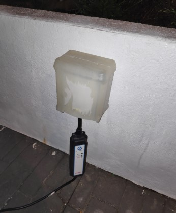

Cómo nos decidimos por una casa Prefabricada CUBE, comprando terreno e incluyendo hipoteca
Vamos a explicar detalladamente nuestra experiencia en el proceso de búsqueda, construcción y resultado final (incluyendo nuestras expectativas, situación hipotecaria, plazos, resultado final con fotos y resumen de GASTOS TOTALES al final del post) de una casa modular de CASAS CUBE.
Imaginamos que muchos de vosotros estáis en la siguiente situación: pagáis un alquiler en un piso o vivís con familiares para ahorraros ese gasto pero queréis independizaros, y os preguntáis si es mejor seguir así (alquilados), alquilar en caso de que estéis conviviendo con familiares, o comprar y pagar mensualmente por algo que va a ser tuyo el día de mañana. Pues esa fue la situación en la que nos vimos nosotros hace dos años.
¿Alquiler o compra?
Todo empezó cuando en la primavera de 2016 nos planteamos dejar de vivir en un piso para trasladarnos al campo. Teníamos dos perritas de aguas y nos gustaba llevarlas todos los días a hacer algo de ejercicio al campo. Siempre habíamos vivido en pisos, de distinto tamaño y en distintos lugares, pero nos incomodaba tener que desplazarnos en coche a zonas verdes (alejadas de la gente, por no molestar con las perras).
Lo primero que hicimos fue plantearnos alquilar una casa. Buscamos las distintas opciones que encontramos a través de agencia inmobiliaria, apps tipo idealista, fotocasa y demás, y particulares. Lo más “económico” que encontramos suponían 650€/mes y a 20 minutos de donde vivíamos en ese momento (y a 50 minutos del trabajo). Nos emocionó visitar esa casa, imaginarnos viviendo ahí, pero la distancia y, sobretodo, el precio mensual nos echaba para atrás. ¿650€/mes para simplemente vivir el tiempo que estemos allí? Somos personas bastante humildes, en ese momento además trabajando uno de los dos a jornada completa y el otro a media jornada… no lo vimos viable.
¿Crédito hipotecario?
Una vez descartado el alquiler de una casa de campo y superar la depresión, decidimos simplemente mirar cuánto costaban las casas en venta de la zona y analizar si podríamos asumir una hipoteca. Lo primero que hicimos fue preguntar al banco, dadas nuestras características y en ese momento, cuáles eran las condiciones de las hipotecas y cuál era el límite que nos aprobarían, y así poder centrar la búsqueda de una casa en torno a esa cifra. En ese momento, tuvimos que reflexionar: ¿cuánto estábamos dispuestos a pagar mensualmente las próximas décadas entre los dos, teniendo en cuenta todas las cosas que podían pasarnos (cambios laborales, familiares, etc.)?
Nos pusimos un límite: 450€ mensuales. Hasta la fecha, habíamos vivido siempre en pisos en ciudad (hasta conocernos, pagando cada uno un alquiler), y el precio más bajo que habíamos pagado estaba entorno a los 500€ mensuales de alquiler por pisos de unos 85m2 (con garaje y trastero) y bien ubicados. Pues nos dijimos a nosotros mismos: si vamos a hipotecarnos que sea pagando menos que lo que hemos pagado hasta ahora de alquiler y, además, que sea una cifra que pueda pagarse con un solo sueldo a tiempo completo o dos medias jornadas, por lo que pueda pasar el día de mañana.
Sabiendo que partíamos de 450€ mensuales, analizamos en el banco qué importe total a invertir nos suponía esa mensualidad. Teníamos dudas de si hipoteca de tipo fijo o tipo variable. Fue la primera decisión que debimos tomar, y bueno, en esto ganó uno de los dos y decidimos tipo FIJO (imagino que tenéis distintas opiniones sobre esto, cada uno tiene sus razones). De este modo, estábamos en torno a los 110.000€ - 115.000€ dadas las condiciones hipotecarias de ese momento (hablamos de marzo de 2016, tipo fijo con 2.5% de interés a 30 años).
Ya sabíamos el importe máximo que podíamos permitirnos. Es importante también tener en cuenta que el banco no nos financiaba el 100% del precio de la vivienda, por lo que debíamos tener ahorros propios para empezar este nuevo proyecto y, además del precio de la casa, hay que pagar un 10% de impuestos en el momento de la compra.
El banco nos financiaba sobre el 80% (negociable) del importe más alto entre tasación y compraventa de la vivienda. En ese momento, conseguimos acumular en ahorros entre los dos un pequeño fondo para intentar suplir el 20% que el banco no nos cubriera (más algún extra que pudiera surgir) y llegar así al 100%: el 80% hipotecado y el 20% de fondos propios.
¿Qué casa comprar?
Empezamos la búsqueda de viviendas por la zona con precio tope de 120.000€ (para dejar margen para los gastos e impuestos de la compraventa). Visitamos 3 viviendas que entraban en ese presupuesto. De verdad, se nos vino el mundo encima. Eran casas destartaladas, que necesitaban reformas considerables y aún encima, mal ubicadas.
Llegados a este punto, sinceramente nos rendimos. Dimos por concluida la que era la derrota del año. Llevábamos muchas horas de búsqueda, de informarnos en inmobiliarias, notarias, bancos, internet, en fin, qué os voy a contar, muchos sabréis lo que es. Son muchas ilusiones y expectativas frustradas. Y todo para nada.
Cómo conocimos CUBE
Unas semanas después, en mayo de 2016, pasamos al lado de la oficina de Casas CUBE, en el centro comercial de Marineda City, en A Coruña. Nos sorprendieron, sinceramente, los precios que tenían y la transparencia y claridad con las que los anunciaban en su página web y en los escaparates de la oficina. Y nos llamaba la atención que fuera presupuesto cerrado. Imagino que todos asociamos la palabra IMPREVISTOS a la construcción. El miedo que supone para una persona que invierte todos sus ahorros en una construcción el que aparezcan sorpresas y no se pueda finalizar la vivienda. Y todo ello sin tener en cuenta que para construir, hace falta un terreno que nosotros no teníamos…
Pero como siempre, nosotros nos creamos nuestras ilusiones rápidamente y pedimos cita para visitar la casa piloto. En este aspecto, tenemos que reconocer que uno de nosotros era muy escéptico con las casas prefabricadas: son casetas de obra, no aíslan bien, son bungalows, tienen poca durabilidad, y un sinfín de CHORRADAS (y lo ponemos en mayúsculas) e IGNORANCIAS de quien no conoce y juzga sin saber. Aquí la otra parte de la pareja fue la que tiró del carro y convenció para ir a ver la casa piloto.
La visita a la casa piloto
A los pocos días visitamos la casa piloto de Marineda City. Una cube 100m2 de una sola planta. Alucinamos. Lo primero a destacar, a parte de la atención recibida por la comercial Vanessa, es la gran capacidad de aislamiento acústico que tenía la casa. Justo delante de la casa había una fuente de agua, con bastante ruido, y un grupo de niños jugando y gritando. Fue entrar por la puerta del porche, cerrar la puerta de cristal y… SILENCIO ABSOLUTO. Nos quedamos helados. Primer punto positivo. La comercial nos enseñó la casa, nos informó sobre todas las características técnicas (desmitificando las tonterías que uno de los dos tenía en la cabeza): aislamiento, tejado, instalaciones eléctricas, de fontanería, etc; nos informó sobre lo que NO iba incluido en el presupuesto y sobre los plazos del proceso. Otra gran sorpresa: se comprometían a tener la construcción hecha y darnos la llave de la casa como mucho 4 meses después de tener la licencia de obra. Alucinamos de nuevo.
Esta es la misma casa que visitamos. Revestimiento de mármol y pizarra:
La pregunta que teníamos nosotros era: ¿en qué tipo de terrenos se puede construir una de estas casas? La respuesta fue rotunda: en los mismos terrenos que se puede construir una vivienda mediante construcción tradicional. Estas casas, aunque sean prefabricadas, tienen las condiciones y garantías que ofrecen gracias a su cimentación (que también la tienen las casas tradicionales) y a los materiales aislantes que conforman sus paredes y revestimientos.
Os resumimos la visita, la información y, lo más importante, EL PRESUPUESTO Y LOS GASTOS EXTRA. En el siguiente enlace podéis acceder a la web de cube, los tamaños de sus viviendas y los precios:
Existían varias cube en función de los metros cuadrados de la vivienda. En nuestro caso, queríamos algo de una planta, tamaño piso, pero en el campo. No necesitábamos grandes lujos ni una mansión. Algo humilde que pudiéramos pagar y disfrutar de la vida sin vernos ahogados. Mientras Vanessa (la comercial) nos informaba, vimos que la de 100m2 nos era suficiente. En ese mismo momento de nuestras vidas, habríamos podido vivir en una de 75m2, pero queremos ampliar la familia en los próximos años y 75m2 la veíamos justa.
Os dejamos unas imágenes del folleto de por aquel entonces y las fotos que sacamos de la casa piloto:

Presupuesto y gastos extra para una CUBE 100m2
Decididos por la 100m2, queríamos conocer los gastos y presupuesto. En ese momento cube no tenía la gama BASIC, ni la PREMIUM, así que lo que nosotros estábamos viendo era una opción intermedia entre las cube normales y las BASIC. Os adjuntamos el catálogo de ese momento, con las características de la cube 100m2 y los precios, que os desglosamos a continuación añadiendo lo que NO incluye el presupuesto:
Como podéis ver, con llave en mano eran 88.495€ (con pack llave en mano supone que ellos se encargan de todo, preparar la documentación, toda la obra, en fin, todo. Nosotros únicamente somos intermediarios entre cube y el ayuntamiento para presentar la documentación en nuestro nombre). Teníamos claro que de hacerlo, tenía que ser llave en mano, puesto que nosotros no teníamos ni idea de arquitectura, obra y edificación.
Cube nos daba la opción de adecuar la distribución de la casa a nuestras necesidades manteniendo algunas condiciones (como que los baños, lavadero y cocina estuvieran del mismo lado de la casa para facilitar la instalación de fontanería), pero podíamos modificar el tamaño de las habitaciones. Todo esto encajaba perfectamente en lo que queríamos.
Ahora bien, ¿qué gastos EXTRA debíamos afrontar no incluidos en los 88.495€?. Los siguientes:
El transporte. En función de la distancia a su almacén, el transporte se cobraba a 5.6€/km. Nos supondría aproximadamente 500€. Asumible.
Impuesto de licencia de obra. En función del ayuntamiento entre un 2 y un 4% del valor de ejecución material. En nuestro caso, nos supondría unos 2400€.
Electrodomésticos: cube ofrece un pack BOSH muy bien de precio, en nuestro caso preferimos comprar el pack a cogerlo por separado, salía muy bien de precio: 2500€
Alta de suministros de Electricidad y Agua.
Acometidas y/o saneamiento agua.
Cimentación si el desnivel de la finca es superior al 2%. Hasta un 2% va incluido. Es complicado que un terreno tenga menos de un 2% de desnivel, así que aquí puede estar el verdadero pellizco de los gastos extra. Depende de cada terreno.
Licencia de ocupación y trámites de registro de propiedad. Que dependen de cada ayuntamiento.
Extras que cada uno quiera añadir a la casa para completarla a su gusto. También hablaremos de ello más adelante.
Pues una vez sumado todo a la lista, el presupuesto no varía. La construcción de la casa tiene ese precio cerrado. El resto dependerá de lo que cada uno quiera hacer en su parcela (jardín, cierre de la finca, etc.).
En ese momento hicimos una cuenta rápida: 89450+500+2400+2500=94.850€ más altas de luz y agua, acometidas licencias y cimentación.
120.000 (presupuesto que nos habíamos fijado)-94850 (teniendo en cuenta que faltaba por contar altas de luz y agua, acometidas licencias y cimentación) =25.150€
Estaba muy difícil encontrar un terreno tan barato que fuera edificable, en nuestra zona y que tuviera espacio para al menos una cube 100. Pero no perdíamos la esperanza a la vez que nos pusimos MODO AHORRO máximo, y cuando digo modo ahorro, lo digo de verdad. Ayuda familiar para comida, para alojamiento (dejamos el piso en el que estábamos alquilados y nos fuimos con familiares para ahorrar dos nóminas al mes) cero caprichos, horas extras en el trabajo, cero gastos. No sabíamos el tiempo que íbamos a tardar en encontrar algo bueno, pero queríamos estar preparados para el momento.
Contraste de información
Era evidente que cube nos iba a dar su mejor imagen, todo positivo y todo precioso. Pero queríamos más información: sobre cube, sobre las diferencias respecto a contratar una construcción tradicional y respecto a otras empresas prefabricadas.
Lo primero que hicimos fue reunirnos con uno de nuestros primos, que es arquitecto en una empresa de construcción. Le expusimos nuestras preferencias, lo que nos gustaría construir y le enseñamos las calidades y materiales de cube, así como el presupuesto. Aun yendo en su contra, nos dijo que no podía competir con semejantes precios poniendo un solo ejemplo: os incluyen dos baños y 7 metros de cristalera con aislamiento en el salón, más toda la construcción, por ese precio. En construcción tradicional, además de duplicar o triplicar el tiempo de ejecución, el precio superaría bastante el de ese presupuesto. Nos volvía a preguntar: ¿estáis seguros de que ese presupuesto incluye todo? Él tampoco daba crédito. Esto nos mosqueaba…. Era fabuloso por un lado que las calidades de materiales de cube nos garantizaran aislamiento de humedad, temperatura, sonido, y un largo ETC, pero a la vez queríamos información de más prefabricadas.
Nos pusimos en contacto con otras 5 empresas de casas prefabricadas y modulares. Eran más económicas que la construcción tradicional, pero lejos de cube. La más similar en precio, suponía uno 20.000€ más que cube, con la distribución que quisiéramos, eso sí. Pero se nos iba de precio.
Buscamos opiniones de cube en internet. No encontramos NADA. Veíamos que en su página de Facebook, construían y entregaban casas cada semana. ¿Dónde estaba esa gente? ¿Nadie comentaba nada? Hoy en día lo entendemos. Se suele comentar algo cuando NO FUNCIONA, NO GUSTA, TE ESTAFAN, etc. pero no cuando algo sale bien, gusta y cumple las expectativas.
Búsqueda de terreno
Bien, si queríamos una cube necesitábamos un terreno EDIFICABLE para construirla. Empezó el momento de visitar agencias inmobiliarias, volver a apps como idealista e indagar en webs de anuncios, además de hacer rutas en coche para ver los carteles de la gente que vendía terrenos por cuenta propia. Tras unas semanas y varios terrenos visitados y descartados, encontramos una parcela perfecta. Tuvimos la gran suerte, en el pueblo vecino (a 5 minutos en coche de nuestra familia, donde vivíamos en ese momento), de encontrar una urbanización muy devaluada por la crisis que disponía de terrenos muy muy económicos. Rectangulares, con acometidas a pie de parcela, con carreteras residenciales y aparcamiento libre y abundante, y superficies de entre 650 y 850m2.
Visitamos con la inmobiliaria varios de ellos. Todos ellos entre 50.000 y 90.000€. Únicamente tenían un hándicap: por detrás de ellos, pasa el camino INGLÉS, que forma parte del camino de SANTIAGO. Eso hace que PATRIMONIO tenga que dar el visto bueno a la hora de otorgar el ayuntamiento las licencias de obra. No iba a suponer más gasto, pero sí más tiempo de construcción. Esos mismos días, encontramos un anuncio de un particular que vendía su terreno en esa misma urbanización por algo más de 45.000€. Nos faltaban unos euros para llegar, pero ya éramos conscientes del gran ahorro que estábamos consiguiendo y que el proceso de construcción desde que compráramos el terreno iba a tardar debido a patrimonio.
Para nosotros era positivo: más meses, más nóminas de ahorro, pudiendo completar la obra subiendo nuestro presupuesto (gracias a ampliar el tiempo de construcción y ahorro).
Solicitamos al vendedor de la parcela la referencia catastral y se la facilitamos a cube. Nos mostraron desde el primer momento los aspectos positivos y los negativos. La parcela era perfecta para construir en forma y tamaño (rectangular de 820m2), pero patrimonio iba a retrasar el proyecto. Nos lo advirtieron para evitarnos frustraciones. Cube construye en toda España y tiene mucha experiencia tramitando documentación con ayuntamientos y organismos como patrimonio, que marca ciertos límites en las características de las viviendas. En ese momento, lo vimos como algo positivo: más ahorro, eso nos permitirá disponer del dinero que hoy no tenemos para pagarlo todo.
Este es el terreno en cuestión. Rectángulo perfecto de 43m x 19m. Unos 820m2:
Nos comprometemos con la compra del terreno y con CUBE. Los problemas bancarios
Estábamos decididos. Teníamos dudas de si el dinero iba a llegarnos, no os vamos a engañar, pero lo comentamos en casa con todos nuestros familiares. Todos estaban dispuestos a arrimar el hombro y ayudarnos los siguientes meses para ahorrar lo máximo posible y cumplir nuestro sueño.
Lo primero que hicimos fue hablar con el vendedor del terreno y confirmar que lo queríamos. Negociamos el precio y conseguimos que nos bajara 2500€, era nuestro por 42.500€. Lo siguiente que hicimos fue hablar con el banco, presentamos el presupuesto de cube y el anuncio de la parcela, además de un sinfín de documentación sobre nuestra vida laboral, económica y si nos apuráis, religiosa...
Durante el proceso de espera por la respuesta del banco, para asegurarnos de que el propietario del terreno no vendía a otra persona la parcela, firmamos un contrato de arras pagando una señal y reservándolo 3 meses. A la vez, pagamos la señal en cube para que empezaran el estudio geotécnico del terreno, que es lo que iba a determinar el presupuesto de la cimentación.
Supimos al cabo de un mes del pago de la señal de cube cuánto iba a costar la cimentación: MAZAZO de 8000 eurazos….. Ya estábamos ilusionados, metidos hasta el fondo, esto no podía echarnos para atrás. Llevábamos un ahorro espectacular en el tiempo que habíamos empezado a mirar esta opción y veíamos el potencial que teníamos para ahorrar durante los siguientes meses.
El banco envió a tasar el proyecto (terreno + casa) y tuvimos la grandísima suerte de que se tasó en 30.000€ más que lo que habíamos solicitado de hipoteca. Nos dio luz verde con algunos problemas (tardamos mes y medio en saber si nos concedían la hipoteca). Nos pidieron aval y un certificado por parte de un notario para estar seguros de que la ley de expropiación no podía aplicarse en nuestro caso.
Al tener respuesta del banco, concertamos fecha para firma de la compraventa del terreno y ya llevábamos 4 meses desde que habíamos visitado la casa piloto de cube.
En esos 4 meses habíamos ahorrado mucho dinero y nos habíamos movido mucho para prever los gastos futuros que nos venían encima.
Además, como la casa piloto de Marineda no era similar a la que nosotros habíamos escogido, viajamos en dos ocasiones a Gijón, a la casa piloto de Lugones, que era muy similar a la que queríamos. Fuimos primero solos y después acompañados por nuestras madres. Les encantó y a raíz de esas visitas fuimos más conscientes de cómo iba a ser la casa para empezar a pensar en cómo íbamos a dejar el jardín, si íbamos a poner cierre en la finca, cómo íbamos a amueblarla, etc.
Esta es la casa piloto de Gijón, también una cube 100:
Una vez el terreno era nuestro y teníamos cerrada la cimentación, cube nos citó para una reunión en Marineda, donde pudimos añadir algunas cosas a la casa que considerábamos importantes, como la cocina, que la modificamos por completo, y pudimos modificar también algunos aspectos de la distribución, así como marcar los puntos de interruptores, enchufes, y demás. Finalmente, nuestro plano quedó de la siguiente manera a la espera del presupuesto final:
Añadimos la cimentación a los gastos, y todos los extras que sumamos a la casa. Y el presupuesto de la casa ascendió a 117.387€ más los muebles. En este punto fue donde recibimos mucha ayuda en casa: varios familiares nos compraron diversos aspectos que fueron restando euros a nuestra lista, los más grandes fueron el porche, que nos restó 6.500€ y los muebles, que nos restaron otros 4.000€ aprox.
Una semana después de la reunión, cube nos facilitó el proyecto básico para solicitar en el ayuntamiento la licencia de obra. Pagamos las tasas y a esperar… Y esperar…. Y esperar…. Así 8 meses de nuestra vida. El ayuntamiento fue bastante rápido, en dos mesitos tenía la validación, pero aquí entró en juego patrimonio. Tardó lo que suele tardar, una vida....... pero respondió que podíamos aplicar el proyecto modificando algunas partidas, como el revestimiento de la casa, que sólo nos permitía poner mortero blanco + pizarra. Queríamos el revestimiento de mármol por sus ventajas a nivel mantenimiento y limpieza, pero por no volver a esperar otros 8 meses más, decidimos ni pelear por ello, aplicar los cambios que solicitaban en el proyecto y enviarlo de nuevo para su aprobación final. La parte positiva es que escoger mortero nos restaba del presupuesto el revestimiento de mármol y gracias a ello nos ahorrábamos otros euros más.
El cambio en la vivienda iba a ser notable por fuera. El resultado iba a ser este:
Ojo que ya ha pasado 1 año desde que visitamos la casa piloto por primera vez, y todavía no hemos empezado ni a hacer un agujero en la parcela… Quien se meta a algo así, debe tener muy claro que la paciencia es su mejor aliado…. Eso sí, son 12 meses de 24 nóminas y ahorro máximo. Esta fue la clave de nuestra suerte.
Dado que estaba claro que el ayuntamiento y patrimonio habían aprobado el proyecto con alguna modificación, cube nos comentó que si efectuábamos el primer pago, podían empezar la construcción en fábrica (aquí está gran parte del secreto del ahorro de tiempo de cube. Pueden empezar la obra sin la concesión final de la licencia porque es en su fábrica). Adelantamos ese primer pago de fondos propios (el banco sólo paga con certificados de avance de obra, por lo que el primer pago debe ser de fondos propios).
Comenzó la obra en fábrica, y en tres ocasiones pasamos por ahí (vivimos a una hora de allí) para acercarles varias cosas que queríamos que instalaran en la casa (un foco en el exterior de la casa, dos radiadores toalleros en el baño, etc). Las visitas fueron muy emocionantes. Esto es lo que pudimos ver:
El hecho de ver físicamente la casa, aunque fuera solo las 4 paredes, hizo que nos motiváramos para seguir con nuestro plan de ahorro total. En un año habíamos ahorrado más que en los últimos 5 años.
Patrimonio tardó otros 2 meses en responder con el visto bueno. Así que en mayo de 2017 empezaron los trabajos en nuestra parcela para preparar la cimentación:
A mediados de Mayo trajeron la casa a la parcela. El momento de su traslado fue un show. Nos enviaban mensajes nuestros amigos del tipo: Acabo de ver pasar vuestra casa por delante de la mia....
Imaginaros, en un pueblo fue expectación máxima!
Os dejamos este vídeo de la instalación en la parcela:
https://youtu.be/3Vh38QV7oR0
Desde ese momento en adelante, nos coordinamos con los operarios que cube contrataba para hacer las diferentes tareas en la parcela. El cierre de la finca se lo encargamos a una empresa externa y tuvo que realizarlo después de que cube pavimentara con hormigón impreso la entrada de la parcela. Para que veáis que no exageramos con plazos de entrega nos ceñimos a la realidad:
18 de Mayo: instalación de la vivienda en la parcela.
26 de Julio: nos dan las llaves de la vivienda.
Es decir, unos pocos días por encima de los 2 meses desde que instalaron la casa en la parcela, más 1 mes y unos pocos días que la casa tardó en estar lista en fábrica.
Están por debajo de los 4 meses desde que se realiza el primer pago para la construcción, así que no nos mintieron en la visita a la casa piloto.
En ese periodo de tiempo íbamos viendo los avances: primero traen la casa, luego instalan las acometidas mientras realizan los trabajos pendientes en el interior de la vivienda, vimos avanzar la canalización y la cimentación de la entrada así como los remates externos de la casa.
El fin de semana siguiente a tener las llaves de la casa nos mudamos. Pasamos el verano pasado ya en la casa y trabajando sobre todo en el exterior para evitar el barro (que con el paso de camiones y excavadoras era lo más sucio). Plantamos césped, algunos árboles frutales, construimos un pequeño muro (para evitar que la tierra se desplazara y acabara en nuestra finca dado el desnivel con el terreno colindante) con dos de nuestros amigos que son albañiles, pintamos el muro, pusimos una vallita para evitar que las perritas accedieran a la zona de coches, etc.
Todos estos extras en el jardín fuimos haciéndolos mes a mes, a medida que íbamos cobrando las nóminas, porque entramos en la casa a cero euros en el banco. De hecho, para poder pagar el cierre de la finca, nos vimos obligados a pedir un préstamo personal de 6.000€ en el banco para poder afrontarlo… quemamos todos nuestros cartuchos.
La evolución durante el primer año en la vivienda fue este:
Resumen Temporal y Económico
El proceso completo nos llevó desde Abril de 2016 hasta Agosto 2017 (desde que visitamos la casa piloto de cube, buscamos, encontramos y compramos terreno, analizamos bancos para hipotecas, solicitamos licencias al ayuntamiento, recibimos las licencias, empezó la construcción, terminaron la obra y nos dieron las llaves).
Os adjunto el cuadro de gastos de la construcción en sí:
A nivel económico, como podéis observar, el terreno es verdaderamente lo que determina el presupuesto. Encontrar una parcela bien ubicada, con acometidas cerca, con buena forma, buen tamaño y barata, es difícil. Los gastos y precios que tuvimos nosotros son en nuestra zona, somos conscientes de que en grandes ciudades esto sería inviable, por ello recomendamos alejarse un poco de los grandes núcleos urbanos para encontrar los chollos.
Nosotros recibimos mucha ayuda familiar con regalos diversos y préstamos que debimos declarar correctamente para cumplir con la legalidad. Sin esa ayuda, no habríamos podido hacer ni comprar muchas de las cosas: el porche, el cierre de la finca, etc.
Del resto de gastos, no todos son obligatorios. Si os fijáis, la partida del cierre de 6.980€ podría eliminarse y realizarse en un futuro. Pero hay que tener en cuenta que al solicitar la licencia de obra se debe incluir todo lo que se va a construir en el proyecto y pagar los impuestos correspondientes por ello, teniendo 2 años de plazo desde que se concede la licencia de obra para finalizar la construcción total en nuestro caso. Si por ejemplo no incluíamos el cierre, deberíamos presentar un nuevo proyecto cuando quisiéramos hacerlo y esperar por otra licencia de obra para realizarlo. Al conocer la situación de patrimonio y el tiempo de demora que supone, preferimos tramitarlo todo junto, aún a sabiendas de que posiblemente no dispondríamos de todo el dinero (contábamos con ayuda en forma de préstamos familiares y con la posibilidad de pedir un préstamo al banco -que fue lo que sucedió- para rematarlo todo).
Finalmente, cuando tramitamos la certificación energética conseguimos una A.
Tras un año de entrar a vivir en la casar, nos informamos sobre la posibilidad de instalar paneles solares en casa y sobre la movilidad eléctrica. Cosa que os contaremos en las siguientes entradas de la web.
Opinión personal sobre el proceso y sobre la casa cuando llevábamos un año y medio en la casa
El proceso se vive muy intensamente, con mucho estrés por la cantidad de dinero que requiere y los recursos de los que cada uno dispone. En nuestro caso, no teníamos asesoramiento por parte de nadie e íbamos a ciegas en cuanto a gastos de burocracia, ayuntamiento, registro, notaría, etc. Agradecimos enormemente contar con un presupuesto cerrado por parte de la constructora y podernos despreocupar de sorpresas en el aspecto constructivo de la vivienda.
Sin embargo, a la vez es un momento de la vida muy ilusionante, en la que se aprende muchísimo, y en la que si uno no tiene paciencia, LA APRENDE, no hay otra forma de sobrevivir. El imaginarte en la casa, el luchar y centrar todas las fuerzas (puramente ahorrativas) en un objetivo común (para la pareja), el pensar en cómo amueblar, en cómo arreglar el jardín, etc. mantiene la ilusión y la parte positiva del proceso.
El día que se realiza la entrega de llaves es un sueño hecho realidad. Muchos meses esperando, mucho dinero ahorrado a costa de privarse de muchas cosas y bueno, llega el momento y merece la pena.
En cuanto a la empresa, recomendamos CUBE a TODO el mundo. Se desviven por facilitar el proceso a los clientes, informan concienzudamente de todos los aspectos de la construcción, tienen un gran conocimiento sobre el proceso (incluso en ocasiones presentábamos documentación ANTES de que el ayuntamiento lo solicitara, eso transmite seguridad y tranquilidad, y el ayuntamiento no pone problemas porque todo va en plazo y correcto). En cuanto al proceso de pago, se adaptan a cualquier opción que proponga el banco para facilitar las cosas. Además, nos hicieron de coach en muchísimas ocasiones. Es un proceso duro, lo saben, y te preparan y advierten sobre los puntos negativos que tiene este proceso. Estuvieron a nuestra disposición por email, por teléfono, en la oficina, y siempre respondieron fenomenal cuando solicitamos visitas a las casas piloto (en total hicimos 5 visitas entre la casa de Coruña y Gijon, con distintos miembros de nuestra familia) y a fábrica (que visitamos otras 3 ocasiones).
Además, tras entregarnos las llaves siguieron pendientes de nosotros. Acudió el servicio postventa a cerrar unos cuantos aspectos que teníamos pendientes y podemos comunicarnos con él por whatsapp o teléfono siempre que tengamos dudas.
Finalmente, tras llevar casi dos años viviendo en la casa, podemos garantizar que el aislamiento térmico y acústico es real. Los inviernos han sido los primeros de nuestras vidas que hemos pasado sin un ápice de frío, a pesar de haberse alcanzado temperaturas por debajo de CERO en nuestra urbanización. La calefacción mediante aerotermia ha hecho que redujéramos a la mitad la factura de la luz respecto a lo que pagábamos en los pisos en los que vivíamos. Y eso que en los pisos donde vivimos, jamás tuvimos calefacción. O sea, que ahora pagamos la mitad de luz que antes incluyendo calefacción que antes no podíamos permitirnos. Comentaremos sobre ello en siguientes entradas en al web.
Hemos trabajado muy duro en el jardín y hemos aprendido un millón de trucos para mantener un huertecito. El consumo de agua es el mismo que en un piso, a pesar de que ahora regamos en muchas ocasiones.
El primer año fue también duro a nivel económico por ese préstamo que os comentamos que tuvimos que solicitar y todas aquellas cosas que nos quedaban pendientes por hacer (el muro de contención, el césped, y un largo etc que no creo que acabe nunca, porque las casas de campo con terreno siempre tienen trabajo, pero es un trabajo gratificante). Hemos trabajado duro para poder amortizarlo cuanto antes.
En cuanto a limpieza, la casa se limpia muy rápidamente, los cristales a pesar de ser muy amplios se limpian muy fácilmente con un aparato de karcher muy económico.
En cuanto a calidad de vida, qué os vamos a contar. Estamos muy contentos con el resultado. Nos queda mucho trabajo por delante, pero sabemos que si siguiéramos alquilados tendríamos más dinero ahora, pero a la larga mucho menos. Ahora mismo, mirando atrás, nos damos cuenta de la cantidad de dinero que gastamos cuando no teníamos un objetivo como el de construir una casa. Dinero gastado sin necesidad en comidas/cenas fuera, en compras realizadas sin mirar el precio de los productos, y un largo etc que todos sabéis y del que somos conscientes cuando reflexionamos, pero que en el día a día pasa desapercibido.
Las ventajas respecto a nuestra vida anterior son numerosas: cero ruidos por vecinos, facturas de luz muy inferiores, cuota más baja de hipoteca que de alquiler, facilidad en cuanto a sacar a las perras a pasear y jugar (entran y salen cando quieren al jardín, y saben que sus necesidades se realizan fuera de la parcela 2/3 veces al día, en paseos que antes debían ser de mínimo 20 minutos y ahora con 2 minutos ya son ellas las que quieren volver para casa), reuniones con los amigos y familiares con comidas en casa mucho más frecuentes, etc.
También tiene algunas desventajas, que conste, como por ejemplo los pequeños animales: dentro de casa no nos afecta porque instalamos mosquiteras en todas las ventanas y puertas, pero hay muchos animales que a muchas personas no gustan (ni la mitad de lo que esperábamos, pero los hay). Y otro punto que para muchos es negativo, es que hay mucho trabajo en el jardín para ponerlo a gusto de cada uno. Por otra parte, siempre hay aspectos de la casa que se quieren mejorar. Eso nos habría sucedido también en un piso propio, que siempre ves mejoras que se pueden aplicar que estando alquilados no se te pasan por la cabeza.
Sugerencias para el que esté pensando en iniciar un proyecto de este tipo
Recomendamos a los que vayan a empezar un proceso similar que se informen todo lo que puedan de los gastos que conlleva para poder solicitar al banco lo suficiente como para terminar el proceso. Nosotros nos quedamos cortos y hubiéramos agradecido tener mas información en un inicio sobre los gastos de impuestos, registrales, bancarios, etc. Ni que decir de que se tenga un pequeño colchón de ahorros para suplir gastos que no entran dentro de la hipoteca.
Lo segundo que recomendamos, es que se analice bien el aspecto bancario. Los bancos aprovechan mucho la oportunidad de incluir seguros vinculados de por vida al crédito hipotecario, tarjetas que obligan a utilizar con un crédito por ir todo unido a una parrilla de bofinicaciones. La parrilla de bonificaciones significa que el banco ofrece un tipo de interés para la hipoteca y, si cumples con varios puntos de una lista, va reduciendo el tipo de interés de la hipoteca, pero claro, esto se revisa cada cierto tiempo, y lo que hoy es seguro igual en 3 años cambia y te suben el interés. Nosotros queríamos una hipoteca a tipo fijo para siempre, sabiendo SIEMPRE lo que voy a pagar, cambien mis circunstancias o no.
Dado que no es una hipoteca tradicional, sino que es de auto-promoción por financiar una construcción, casi ningún banco oferta estos créditos. En nuestro caso, evitamos esas vinculaciones a toda costa. Conseguimos firmar una hipoteca en la que únicamente nos obligaban a tener seguro de vida y de hogar el primer año con ellos, y a partir del segundo libre (este año, ya hemos renovado el seguro de vida y ha supuesto un ahorro de 175€ respecto al que firmé el primer año con el banco). Logramos también no vernos obligados a depender de parrilla de bonificaciones, ni a tener siquiera la nómina vinculada, de modo que si alguno de los dos el día de mañana se queda sin trabajo y desaparece una nómina del banco, no nos suben el tipo de interés y siempre, siempre, vamos a pagar 440€ mensuales, salvo que amorticemos en plazo o cuota.
Evolución una vez nos asentamos en la vivienda
Y eso es todo amigos. Esperamos haber disipado algunas de vuestras dudas :)
Nuestra instalación de ACS y calefacción y su evolución
Como muchos nos habéis preguntado por el sistema de calefacción y ACS en telegram, subo esta entrada para enseñaros la instalación que tenemos en casa.
Para contextualizar, hablamos de una vivienda unifamiliar de 100m2 situada en Galicia, construida en 2017, con 7 metros de cristalera de suelo a techo en salón y con buenos materiales de aislamiento (como ya explicamos en "http://micasacube.com/nuestros-inicios"). Importante a tener en cuenta que la temperatura exterior oscila entre -5° y 15° en meses fríos.
Materiales específicos de la instalación: la bomba de aerotermia
Como Bomba de aerotermia tenemos el KOSNER modelo KMCI-07 1PH. Ésta se conecta con un interacumulador (visualmente parece un termo convencional) TESY GCV9S (de 116L) y, junto a ello, tenemos instalados los radiadores MITHOS VERONA excepto en los baños, que pusimos radiadores toalleros de agua de los normales conectados también a la Red de radiadores de la casa.
Materiales específicos de la instalación: el interacumulador
El sistema abastece las dos duchas y todos los grifos de la casa tirando a la vez del agua caliente, sin perder temperatura ni presión. La caldera TESY permite conectarse a la Red eléctrica para no depender únicamente de la aerotermia, pero nosotros lo tenemos completamente desconectado, tirando solo del kosner. Hemos llegado a ducharnos dos a la vez y otra persona utilizar el agua caliente en la cocina y el sistema responde sin problemas, abasteciéndolo todo a la vez sin cortes ni variaciones en la temperatura del agua.
Materiales específicos de la instalación: los radiadores y sus elementos
El kosner es muy eficiente, poco consumo, muy silencioso, y la potencia de ese modelo en concreto dá de sobras para mantener 100m2 de vivienda a una temperatura cálida con los siguientes radiadores:
2 radiadores toalleros de 650w para dos baños, uno de 5,5m2 y otro de 5m2.
3 radiadores en cocina - salón (es espacio abierto de 33m2) de 9, 10 y 15 elementos cada uno.
2 radiadores en recibidor (4m2) y pasillo (6m2), de 6 elementos cada uno.
1 radiador en lavadero (4m2) de 4 elementos.
3 radiadores en las 3 habitaciones, uno de 7 (para 8m2), otro de 10 (para 10m2) y otro de 14 elementos (para 14m2).
Materiales específicos de la instalación: el termostato de serie
Desde noviembre de 2018 tenemos instalado también un medidor mirubee con una pinza anclada a la bomba de aerotermia. Y ello nos ha permitido sacarle mucho más partido al sistema de calefacción modificando algún parámetro, como el termostato. Hasta instalar el mirubee, estábamos muy contentos con los consumos que teníamos en la casa (nos comparábamos con nuestra experiencia anterior en pisos de distintas antigüedades y calidades). Habíamos reducido muchísimo la factura de la luz pero no conocíamos en profundidad el consumo de la bomba. Con el mirubee todo eso cambió. El Termostato ambiente que venía conectado de serie al sistema era un Solver, un simple termostato de temperatura con función de subida y bajada de temperatura en el instante y manualmente, sin control remoto. No tenía funciones programables ni demás configuraciones típicas de los cronotermostatos.
Consumo del sistema: introducimos mejoras para convertir la instalación en algo todavia más eficiente
Consumo del sistema: con termostato de serie
Os adjunto un ejemplo el día que más frío hizo en enero con el Termostato sin programador. Ese día para mínimas de -10 grados el consumo total de la bomba de aerotermia fueron 18kwh. Nuestro récord desde que la estamos midiendo:
Me informé sobre distintos termostatos inteligentes y cronotermostatos, y me decanté por probar un TADO v2. Además de tener una instalación super básica y cómoda (simplemente se sustituye el antiguo termostato por el TADO, sin instalaciones adicionales de relés en circuitos ni nada por el estilo) y se enlaza a la web/app de TADO sin problemas. Tiene un servicio técnico con ayuda muy rápida y a través de email resuelven todas las dudas en poco tiempo, ayudando incluso en remoto a facilitar la instalación cuando surgen problemas de enlace.
Consumo del sistema: con termostato inteligente
Pues bien, este termostato, además de poderse gestionar a través del móvil, tiene funciones como la geolocalización, es decir, se vinculan móviles a la app y cuando éstos se alejan de casa, previa configuración, el sistema TADO mantiene apagada la calefacción y, a la vez, cuando detecta que el móvil en cuestión se aproxima a casa, según la distancia programada enciende la calefacción si la temperatura de la vivienda está por debajo de la consignada para esa hora. Todo ello sin cuotas mensuales ni más gasto que la inversión inicial en el aparato.
Hasta aquí el ahorro respecto al termostato de serie parece conseguirse gracias a funciones como la geolocalización o la programación de la temperatura en función de la hora y tarifa eléctrica. Sin embargo, nos sorprendieron sus funciones inteligentes no perceptibles a nuestros ojos. El termostato fue capaz de estudiar las pautas de consumo de la bomba y adaptar su puesta en marcha/apagado para lograr la máxima eficiencia posible. Recordáis la imagen que he adjuntado antes del día de temperatura mínima récord? Ahi se aprecian las curvas de encendido/apagado del dispositivo. Os adjunto un ejemplo de dichas curvas en otro día de mucho frío con el termostato TADO. Para una temperatura mínima de -3 grados, la bomba consumió 11,5kwh:
Pero la mejor imagen comparativa es la siguiente. Os he marcado con punto rojo el día en que instalamos el termostato inteligente. Veis que a partir de ahi, se observa una bajada de consumo en la bomba, cuando hubo días puntuales posteriores en los que hizo más frío que en promedio cuando teníamos el termostato SOLVER:
Consumo del sistema: con válvulas termostáticas y modificando la temperatura de impulsión de la bomba
Unos meses después del cambio de termostato, decidimos dar un paso más allá y cambiar las válvulas de los radiadores que vienen por defecto (que simplemente pueden permanecer abiertas o cerradas y el cambio de estado se realiza manualmente) por unas válvulas termostáticas inteligentes.
Una válvula termostática es una válvula autorreguladora que se instala en la entrada de agua de los radiadores de un sistema calefacción de agua caliente para controlar la temperatura de un local o habitación.
Nosotros nos decidimos por las válvulas termostáticas de TADO. De este modo podríamos integrar los radiadores en el sistema de TADO para que se gestionara en conjunto. Cambiamos las válvulas de TODOS los radiadores exceptuando los de los baños. Las válvulas de los baños quedaban abiertas siempre. Así, el sistema quedaba de la siguiente manera:
A la izquierda la temperatura que tiene la estancia. A la derecha la consigna o si está apagada la calefacción
https://youtu.be/fCg5qXelc7A
Cada una de las válvulas registra la temperatura y humedad de la estancia y la envía al centro de control de TADO, que a su vez contiene la temperatura y humedad que registra el termostato en sí en el lugar en que esté situado.
El sistema tiene dos posibilidades:
En la opción 1, el corte de la caldera no interviene para nada. Si tienes la casa a 19º y por ejemplo pides 23º y 21º en dos estancias distintas, la primera que lo necesite (dormitorio 21º o salón 23º) pedirá a la caldera que arranque. Y si por ejemplo tienes un cuarto a 24º, la caldera estará encendida hasta que el cuarto de 24º llegue a esos 24º. Pero, calentará con menor intercambio calórico (menos gasto) ya que la variación de temperatura será menor. Así no pasará agua por los radiadores de 23º y 21º que estarán cerrados (automáticamente).
En la opción 2, la caldera estará encendida mientras que en el salón no haya 23º. Pero cuando llegue a 21º, ya no pasará agua por el radiador del dormitorio... por lo que calentará más rápido al haber menos pérdida.
En nuestro caso decidimos decantarnos por la opción que viene preestablecida, la primera. Configuré las válvulas con las temperaturas que teníamos hasta el momento pero sólo en las estancias en las que íbamos a estar: por la mañana antes de levantarnos pasillo + salón + cocina a 21º, durante el día todo a 21º menos la habitación principal y vestidor (que estarían marcados como OFF), a partir de las 22.00 habitación principal y vestidor a 21º y el resto marcado como OFF. Todo ello teniendo en cuenta que cada vez que se encendiera la calefacción los baños entrarían en el circuito por tener válvulas normales abiertas 24 horas.
De este modo, el sistema calentaba a 21 grados de 5 a 7 para tener el salón a más de 21 grados. Antes del cambio de válvulas calentaba toda la casa y después del cambio de válvulas sólo el pasillo, cocina y salón. El resultado fue el siguiente:
Patrón matutino de consumo ANTES de cambiar las válvulas:
Consumo acumulado de 4,75Wwh (de media) a las 8 de la mañana desde las 00.00. El sistema calienta a 21º toda la casa antes de las 8.00
Patrón matutino DESPUES de cambiar las válvulas:
Consumo acumulado de 1,46kWh (de media) a las 8.00 de la mañana desde las 00.00. El sistema calienta a 21º sólo el pasillo, salón, cocina y baños gracias a la discriminación de las válvulas termostáticas
La conclusión que extraigo de las pruebas realizadas las primeras semanas es que con un 30% del consumo de antes, obtengo el mismo resultado desde las 00.00 hasta las 8.00.
Extrayendo el consumo de la bomba sin y con las válvulas podemos ver esta diferencia en los primeros días:
Vemos que la tendencia es a reducir el consumo, teniendo en cuenta que las condiciones climatológicas de los días posteriores a colocar las válvulas inteligentes fueron mas frías que las anteriores es un gran avance.
Donde veis la flecha roja probé a modificar la temperatura de impulsión de la bomba para que lo hiciera a 42 grados en lugar de a 45º (como la tengo normalmente configurada), ya que me comentaron que en ocasiones disponer de válvulas inteligentes puede ir acompañado de un descenso en la temperatura de impulsión por reducir el circuito por el que el agua se mueve, consecuentemente se consigue un ahorro energético.
Los dias 9 y 10 hice pruebas con la temperatura de impulsión del agua, el día 9 a 40 grados y el día 10 a 42. A partir del 11 volví a como lo tenía inicialmente, 45 grados. Como podemos comprobar, nuestra bomba ya está muy ajustada en cuanto a temperatura de impulsión y modificar ese patrón para subir (a 50º por ejemplo) o disminuir (desde 35º en adelante) provocan un incremento del consumo (comprobado para todos y cada uno de los valores, el ideal para nuestro sistema en nuestras condiciones son 45º de impulsión del agua).
Tras unos meses de uso con las válvulas podemos empezar a extraer conclusiones:
En el siguiente apartado os completamos la tabla con los datos de 2021 añadiendo el consumo de la bomba de aerotermia en combinación con el aprovechamiento de los excedentes fotovoltaicos con el derivador.
Consumo del sistema: con derivador de excedentes fotovoltaicos
Antes de continuar, es importante remarcar que mientras estábamos en proceso de legalización de la instalación fotovoltaica no vertíamos ni un kWh a la red teniendo el vertido cero activo (la instalación fotovoltaica sólo producía la energía que la vivienda demandaba, ni un W de más).
Vaya por delante que una vez legalizada la instalación y teniendo activa la compensación de excedentes en la factura de la electricidad (Consiste en que la energía fotovoltaica que produces y no consumes en ese momento la viertes a la red y a cambio la comercializadora te descuenta de la parte de consumo de la factura la cantidad correspondiente) es mucho más eficiente aprovechar la aerotermia para el ACS y la calefacción en lugar de utilizar las resistencias del interacumulador (para ACS) y las resistencias de los acumuladores de calor (para calefacción).
Dicho esto y sabiendo que no teníamos todavía legalizada la instalación, la última mejora que aporté al sistema fue incluir los derivadores de excedentes fotovoltaicos al ACS y al sistema de calefacción.
Sistema ACS con derivador de excedentes:
Aprovechando la energía solar sobrante (la que está disponible pero la vivienda no necesita) construí un regulador al que se enchufara el interacumulador. ¿Recordáis que os comentaba al principio de esta entrada que el interacumulador tenía la posibilidad de enchufarse a la corriente para apoyar con la red a la bomba de aerotermia pero que nosotros lo tenemos desenchufado para que sea más eficiente y sólo funcione con lo que la bomba le aporta? Pues enchufé el interacumulador a este regulador que se encarga de transferir al termo la energía solar sobrante y que caliente el ACS (agua caliente sanitaria) SÓLO con energía solar, sin gastar ni un kWh de red. Eso supone que la bomba de aerotermia NO se tenga que encender bajo ningún concepto para nutrir al interacumulador cuando en casa se necesita agua caliente y hay producción solar de sobras.
No obstante, hablamos de un ahorro mínimo. Debéis tener en cuenta que la bomba apenas trabaja cuando se enciende para calentar el agua del termo. En una de las pruebas que realicé podéis ver el tiempo de trabajo y consumo que tiene la bomba para calentar el 100% del agua del termo una vez la hemos gastado toda:
Como véis 20 minutos exactos desde que arranca la bomba de aerotermia hasta que se detiene por completo. Pico de consumo inferior a 2000W (recordemos que la bomba es de hasta 3kW).
Sin embargo, el eliminar este pico de 2000W durante el día gracias a la producción solar me proporciona energía disponible para poder cargar los coches eléctricos si es necesario.
Sistema de calefacción con derivador de excedentes:
A la vez que en el caso de ACS, incorporamos otros dos derivadores de excedentes fotovoltaicos a dos acumuladores de calor (uno en salón de 1300W y otro en dormitorio de 800W). Los acumuladores de los que os hablamos son los típicos cerámicos, que mucha gente oferta en wallapop incluso de manera gratuita a cambio de recogérselos en sus viviendas (son de un peso muy elevado y para la mayoría de la población son inútiles).
En invierno la producción solar es muy inferior a la de verano, la casa se mantendrá más fría y, en nuestra ausencia, la calefacción NO se encenderá porque el termostato TADO así está configurado. Mi idea era la de tener los acumuladores de calor enchufados a los derivadores para que durante el día el salón y el dormitorio cogieran la mayor temperatura posible gracias al sobrante de energía solar y, cuando nosotros llegáramos a casa, la bomba de aerotermia tendría que trabajar en menor medida para alcanzar la temperatura consigna (siendo ese consumo en horario punta, además), ya que un porcentaje del trabajo lo habrían realizado los derivadores junto a los acumuladores.
Organización de los derivadores de excedentes en el sistema:
Coloqué un derivador en el interacumulador del ACS como máster las 24h. Luego en función del horario disponía de otro derivador como máster en el acumulador del salón (de 6.00 a 13.00) y un derivador en el acumulador del dormitorio como esclavo (de 6.00 a 13.00). De 13.00 a 6.00 al revés, el del dormitorio era el máster y el del salón era el esclavo.
De esta manera lograba un equilibrio de calor en toda la vivienda en función de las horas en las que estábamos en una zona u otra.
Los resultados:
Tras pasar el invierno de 2021 (en el que tuvimos del 6 al 11 de Enero el temporal Filomena, que en el exterior de nuestra vivienda se registraron temperaturas mínimas de -10 grados), utilizando el sistema de derivador de excedentes para el ACS y para calentar la vivienda con la energía fotovoltaica que nos sobraba, logramos un ahorro más grande de lo esperado:
Como indicamos en la tabla, debemos tener en cuenta que la segunda semana de Enero de 2021 sufrimos el temporal Filomena que supuso un funcionamiento fuera de lo normal para la bomba de aerotermia, calentando la vivienda con muchos más impedimentos que en los Eneros de años anteriores. No obstante, el resto del mes los derivadores compensaron ese trabajo extra de la bomba durante Filomena para lograr no consumir más que el año anterior.
Invierno 2022
El invierno de 2022 cambiará por completo el patrón. Ya disponemos de compensación de excedentes fotovoltaicos en la factura de la electricidad y aprovecharemos la eficiencia de la bomba de aerotermia para el ACS y la calefacción, reduciendo el gasto en la factura de la luz en lugar de los kWh de la bomba de aerotermia.
En verano de 2022 os pasaremos más datos para continuar con la comparativa en cuanto a ahorro, incluyendo a partir de ese momento el ahorro en €, no sólo en kWh.
Nos animamos a contar nuestra experiencia con el vehículo eléctrico porque es uno de los temas por los que más nos preguntan en nuestro día a día.
Todo empezó a finales del verano de 2018. Me empecé a informar sobre una posible instalación de paneles solares para nuestra vivienda y, para ello, entré en varios grupos del mundo de telegram. Fue allí, donde además de aprender multitud de aspectos relacionados con la energía solar, descubrí el mundo del VE, completamente desconocido hasta el momento para mí.
Reboté desde un grupo de telegram a un canal de IVOOX con varios podcast relacionados con esta temática, y de ahí a dos más, y me escuché los cientos de podcast mientras me desplazaba al trabajo para enterarme bien del mundo del motor eléctrico.
En nuestro caso, utilizamos dos coches en casa para desplazarnos por separado a nuestros trabajos y estudios:
Uno de los coches que teníamos era un RENAULT MEGANE SPORT TOURER diésel, la ranchera de Megane, que compramos de segunda mano casi nuevo con 3 años. Ahora ya tenía 5 años y 95mil km. Este coche realizaba una media de entre 20 y 25mil km al año, entre 50 y 100km al día.
El segundo coche que teníamos era un FORD CMAX diésel comprado nuevo, de hacía 6 años y con 60mil km. Ya veis que este coche se utilizaba mucho menos, realizaba una media de 10mil km al año (unos 30km al día), pero en este curso académico iba a subir su índice de kilometraje de 30 a 120km durante tres días a la semana.
El mío era el Megane. Me gastaba una media algo más de 80€ al mes en diésel y la verdad es que el coche me encantaba. Sin embargo, empecé a ver las ventajas del VE por encima de las desventajas para nuestra situación, y más habiéndonos planteado ya una instalación fotovoltaica a corto plazo. Lo hablamos en casa e inicialmente me dijeron que estaba como una cabra :lol: “Que los VE son muy caros, que hay que instalar un punto de carga, que no tienen autonomía… Trasladé todo lo aprendido para transmitir tranquilidad: que no es necesario instalar ningún punto de carga, que simplemente podíamos poner un enchufe schuko de toda la vida en el exterior de la vivienda, que no era tan complicado y que no nos supondría una inversión; que los paneles solares iban a ayudarnos a cargarlo prácticamente gratis en días de buen tiempo; que podíamos empezar buscando uno de segunda mano para realizar una inversión inicial menor y vender el Megane antes de sus 100mil km (cifra que cruza la barrera psicológica de mucha gente para considerar el coche como “viejo”), etc” :lol:
Total, que nos convenció el tema y nos hicimos una ruta por distintos concesionarios (Nissan para el Leaf 40, Kia para el Niro PHEV (híbrido enchufable), Renault para el Zoe, Hyundai para el Ioniq en sus versiones enchufable. .. Para TODOS nos asustaba muchísimo el precio y tengo que decir que SÓLO NISSAN quería realmente vendernos el coche ofreciéndonos opciones buenas en cuanto a financiación. Eso sí, tras probarlos nos enamoramos de la sensación de conducción eléctrica.
El miedo que teníamos era realizar ese desembolso tan grande y luego arrepentirnos por no adaptarse ese tipo de coche a nuestro sistema de vida. Sabíamos que íbamos a tener que hacer ciertos cambios en nuestras rutinas, pero no estábamos dispuestos a tener que hacer gincanas todos los días por cambiar de coche, cuando los que teníamos funcionaban perfectamente.
Tras unos días de reflexión, empecé a mirar a fondo las webs de segunda mano. Encontré un coche que respecto al precio ofrecía buenas prestaciones y una autonomía suficiente para mi día a día, era un Nissan Leaf 30, de aquella por 16mil €, año y medio de antigüedad y 50mil km. No me lo pensé, puse mi coche a la venta rápidamente y en tan solo 4 horas lo tenía vendido. Llamamos para reservar el leaf y en un mes lo tuvimos en casa, no sin múltiples problemas, todo hay que decirlo.. Lo compramos a un concesionario multimarca de Andalucía completamente desconocedores del VE. Cuando el coche llegó a casa, le faltaba la tarjeta SD, que no solo controla los mapas del navegador, sino que funciona como registro para que el vehículo guarde hasta la hora…. Y diréis, bueno, un contratiempo sin importancia.. Pues no, porque en los eléctricos es necesario para beneficiarse del periodo valle (mucho más económico con Discriminación Horaria) cargar de noche, y si tienes que estar todos los días saliendo al coche a las 22.00 o 23.00, según invierno – verano, para ponerlo a cargar y desconectarlo por la mañana menudo rollazo…. Aun encima, son tarjetas específicas para cada número de bastidor, por lo que no nos servía ninguna otra. Evidentemente el concesionario corrió con los 800€ de gasto de la nueva tarjeta (la del coche la robarían por el camino o en el mismo concesionario para venderla por internet, que al parecer van caras) pero tardamos casi 3 meses en tener la tarjeta en casa.
Los primeros días con un EV: el ahorro
Mientras tanto nos buscamos la vida para programar el coche. Primero instalamos un Schuko nosotros mismos fuera, con sus protecciones y toma de tierra en el cuadro eléctrico de casa e inventándonos un sistema provisional para que no se mojara durante la noche cuando lloviera (recuerdo que vivimos en Galicia, con diluvios universales en muchas ocasiones) :lol:
Os pongo unas fotos del cargador provisional con el que empezamos al estilo puramente Manolo y Benito:
Qué deciros de los primeros días con el Leaf. Había peleas en casa para saber quién se lo llevaba, jajajaja. Hoy me toca a mi que hago más km.. No! Hoy me toca a mi que ayer lo tuviste tu…. Jajaja De ser el coche de apoyo, que era la intención con la que lo compramos, pasó a ser el coche principal, cogiendo el CMAX sólo para distancias cortas o para distancias muy muy largas que el leaf no pudiera hacer… pero el que más km fuera a hacer cogía el eléctrico para ahorrar lo máximo posible.
Los que me conocéis no lo dudaréis: ya el día antes de llegar el coche a casa tenía una pinza del mirubee en el cuadro eléctrico de casa para el enchufe del coche :lol: Quería saber al detalle cuándo consumía en kwh al día, a la semana, al mes, y, además, con qué potencia (kw) cargaba con su cargador de serie.
Primer mito al suelo: no había que subir la potencia contratada en casa. El coche cargaba a poco más de 2kw y si lo cargaba casi cada día con 3 o 4 horas estaba listo para el día siguiente. Me rallé mucho la cabeza con el tema de la degradación de la batería, y por ello quise cargar el coche siempre al 80% exceptuando algunas veces que lo llenaba al 100% para evitar problemas de desequilibrio entre celdas. Como el leaf no tenía para programar la carga de forma que la parara al llegar al 80%, me creé una hoja Excel donde apunté el tiempo que tardaba en cargar, estableciendo una regla de tres y poniendo cada día el coche a cargar el tiempo que necesitara. Para evitar tener que cambiar el temporizador todos los días, puse un enchufe inteligente (un blitzwolf) para poder programarlo desde el móvil y santa maravilla.
Pues bien, los comentarios de los de nuestro alrededor eran: menuda factura de la luz os va a llegar, os vais a arrepentir del cambio, y un sinfín de comentarios de CUÑAOS jajajaj. Pues bueno, iba haciendo mis cálculos y en los primeros 7950km gasté exactamente 78,97€ de electricidad (incluyendo ahí los impuestos y el IVA para esos kwh).
Nos animamos a cambiar el coche de combustión por otro EV
Ahí empezaron los problemas, mi pareja vio la ventaja que suponía el eléctrico y quiso cambiar el CMAX :lol: y todavía ni un panel solar en casa!!!!!!! xDDDD Teníamos claro que el segundo eléctrico no podia ser otro leaf 30, porque su autonomía no nos era suficiente como para arriesgarnos a necesitar hacer un trayecto algo más largo y no poder, y en el mercado de segunda mano no había opciones económicas que tuvieran más autonomía. Me tocó llevar mi leaf a la revisión de este año y ese mismo día, en el concesionario, me enteré de la oferta en la que la marca descontaba 5500€ en la compra de un Nissan Leaf 40 nuevo. Llamé rápidamente a mi pareja y esa misma tarde estábamos en el concesionario para que probara el leaf 40 y le tasaran el CMAX. El leaf le flipó y nos sentamos con el comercial a echar cuentas. El comercial una gozada, entendía de eléctricos, nos buscó la mejor opción de financiación e incluso peleó en el concesionario para que nos aplicaran un descuento de casi mil euros más por trabajar en gran empresa. Total, que si entregábamos el CMAX, nos quedaba el leaf 40 en algo más de 17mil € sin financiaciones vinculadas al concesionario ni permanencias…. No lo dudó y lo cambió.
Tuve que modificar el enchufe schuko que había puesto y añadir un segundo enchufe. Por ahora ambos en la misma línea, por lo que cargamos por separado. Y construimos una caseta para no tener que andar enchufando y desenchufando los cargadores y metiéndolos en los coches. Además, así teníamos los enchufes protegidos, los cargadores fijos y los blitzwolfs a cubierto de la lluvia.
Tened piedad, ninguno de los dos es albañil ni carpintero ni electricista. De hecho, hace 6 meses ninguno de los dos sabía pelar un cable xD Pero el ahorrar y hacerlo todo por cuenta propia, aunque no quede perfecto, es más gratificante.
Un último cambio
Así estuvimos dos meses. A la llegada del leaf 30 compré un obd2 para analizar el estado de la batería y anotar su progresión mediante la App específica de nissan: leafspy. Pues bien, en el transcurso de 4 meses el leaf 30 perdió un 4% de salud de batería tratándolo entre algodones. Me ralló muchísimo y quise también hacer mediciones de la batería del leaf 40. Nos lo entregaron y estaba al 97,5%. En dos meses lo tenemos al 95% y esta semana nos dijeron en Nissan que lo lleváramos por si hay que equilibrar las celdas………. Además, me ofrecieron cambiar el leaf 30 por el leaf 40, tasándome el leaf 30 por encima de lo que me costó en octubre! Estuve a un paso de cambiarlo, pero no me convence la situación de la batería del leaf 40 que ya tenemos y decidí mirar otras opciones con batería refrigerada.
Desde siempre me ha encantado el Hyundai Ioniq EV, tuve la ocasión de ver un par de venta de segunda mano de algunos propietarios que habían comprado el tesla model 3 y se deshacían de sus Ioniqs, pero habían volado en unos pocos días. Me arrepentí de no haberlo cambiado pero necesitaba tiempo para vender mi leaf 30. Hasta que apareció la oportunidad de hacerme con un Ioniq EV de km 0 por el mismo precio que me ofrecían el leaf 40. Ni me lo pensé. Vendí el leaf 30 en una semana y estoy esperando a que me llegue el Ioniq mañana
Muchísimos nervios, ganas de probarlo y hacer comparativas con el leaf 30 y el leaf 40. Tenemos ya el primer pique en casa: le digo a mi pareja que voy a ser capaz de hacer más km con el Ioniq y su batería de 28,2kwh que mi pareja con su leaf 40kwh…… y me dice que posiblemente, pero que lo duda…… así que bueno, tenemos la gran suerte de tener una hipoteca bajita, haber podido vender bien los coches diésel que teníamos y haber conseguido buenas financiaciones para los dos eléctricos, pero aún encima, estamos cargando gratis los coches en casa. Os paso el enlace del post que subí sobre la nueva tarifa eléctrica que tengo, en la que no pago la carga de los VEs de 1 a 7 de la madrugada y, además, tenemos desde hace una semana los paneles solares funcionando.
Lo siguiente que haré será separar las líneas de los schukos de los cargadores de los coches aumentando sus protecciones en el cuadro. Y, por supuesto, contaros la experiencia con el Ioniq y sus ventajas/inconvenientes respecto a los leafs.
Espero que al menos nuestra historia os haya animado un poquito a pensar en cambiar vuestros coches térmicos por eléctricos y hacer un poquito mejor este mundo.
Hoy queremos contaros nuestra experiencia con más detenimiento con el que fue nuestro primer vehículo eléctrico: un nissan leaf 30 que compramos de segunda mano.
Como os comentaba en el hilo inicial sobre nuestros VEs, cuando empezamos a explorar este mundo fue de los primeros modelos que conocimos. Si bien es un coche muy famoso y muy vendido es, a la par, un coche muy odiado y castigado. Desde mi punto de vista y como propietarios de uno durante varios meses, debo decir que el coche es una pasada si tenemos en cuenta el contexto en el que se lanzó al mercado. La versión inicial de este modelo es el Nissan Leaf 24kwh, que salió inicialmente al mercado en 2010 y una segunda versión con química de su batería mejorada y 100 mejoras técnicas a mayores, en 2013. El exterior e interior del leaf 24 es exacto al leaf 30 (que salió al mercado en 2015) en sus distintas versiones, con algún pequeño cambio, sobre todo a nivel software. Para daros un par de ejemplos, en la programación de la carga, en los leaf 30 nissan eliminó la opción de cargar limitando hasta el 80%, dejando como única opción la programación con hora de inicio y hora de fin de la carga desde el vehículo; otro cambio entre el 24 y el 30 es que el nissan leaf 30 sí tiene acceso a su ubicación desde la APP móvil NissanConnect, mientras que en el modelo 24 no podemos conocer en todo momento dónde se encuentra situado el vehículo.
Por tanto, la mayor y más importante de las diferencias en el restyling (que hicieron sobre él es el aumento de la batería y la modificación de su composición química). Por todos es conocida la gran degradación que sufren las baterías de los leafs (y de las demás marcas de vehículos eléctricos), que tanto con el paso de los km como con el paso del tiempo, la batería va perdiendo salud, restando autonomía a pesar de tenerla cargada al 100%. Para los que no sabéis qué significa este concepto de degradación de la batería, comentaros que se trata de la pérdida de "capacidad útil" de la batería con el paso del tiempo. Hablamos de porcentajes de pérdida, y es importante no confundirlos con porcentaje de carga. Es decir, poniendo como ejemplo un leaf 30kwh, compramos un coche con la batería al 100% de salud (o 100% de SOH, que son las iniciales con las que aparecen en los tests extraídos con la herramienta OBD2). Esta batería puede cargarse entre el 0 y el 100% (de SOH, que son las iniciales con las que aparecen en los tests extraídos con la herramienta OBD2). Pues bien, a medida que pasa el tiempo y los kilómetros, la batería va a poder cargarse siempre desde el 0 hasta el 100%, pero su capacidad útil no volverá a ser jamás la misma que tenía al salir del concesionario nuevito de trinca. Del 100% inicial de SOH, irá bajando al 99, 98, 97%....y así sucesivamente hasta alcanzar un estancamiento que dependerá en cada caso de muchos factores (temperatura ambiental, temperatura de la batería, km realizados, tiempo de la batería, intensidad de las cargas (en potencia de carga y en potencia de descarga), descargas profundas, etc.). Es importante destacar que los fabricantes no permiten cargar la batería al 100% de su capacidad por defecto para tener cierto margen de seguridad, pero al final la degradación aparece de todos modos.
Como podéis ver, toda esta información se tiene de mano gracias a que el coche lleva muchos años en el mercado, por lo que no tiene ni trampa ni cartón. Cuando nosotros analizamos y estudiamos las diferentes opciones que había en el mercado, éramos conscientes de estos impedimentos respecto a la batería y, aun así, nos parecía demasiado pagar un extra todos los meses por una batería en alquiler. Para los que estéis PEZ en este tema, hay versiones de VE que vienen con la batería en alquiler para garantizar que siempre vas a tener la batería en perfectas condiciones (y aquí tengo que decir que tampoco es del todo así, porque en los contratos explican en letra pequeña que la batería debe perder cierta capacidad para cambiarla, aun siendo de alquiler, y quizá esa “cierta capacidad” no es la que se espera pagando mensualmente la cuota correspondiente). Hablamos de cuotas mensuales en función del kilometraje y, en mi caso, para un Renault zoe, la mensualidad rondaba los 100€: no los pagana en diésel y no iba a pagarlos en alquiler de una batería. En mi caso no era rentable, para otras personas que hacen muchos km igual sí.
Pues bien, como no estábamos seguros de si el VE se adaptaba a nosotros y si nosotros nos íbamos a adaptar a él, decidimos mirar opciones de segunda mano de coches que tuvieran una autonomía por encima de la que realizaba en mi día a día (entre 40 y 100km), para tener en cuenta esa degradación futura y saber que aunque la batería me perdiera capacidad, iba a tener asegurado mi recorrido diario sin problemas y, otro aspecto que me parecía importante al analizar este dato, es que si compras un VE con mucha más autonomía que la que necesitas, es mucho más posible moverse entre el 20 y 80% de carga que recomiendan los fabricantes, para cuidar así la salud de la batería e intentar frenar un poco su degradación.
Cómo escogerlo
Llegados aquí, tengo que deciros que la gente de mi alrededor, con la que comentaba que estaba pensando en cambiar mi diésel por un eléctrico, me recomendaba coger un coche con mucha más autonomía de la que yo necesitaba por otros dos motivos extras:
Iríamos mucho más sobrados en cuanto a carga y no tendríamos que cargar cada día. Correcto hasta cierto punto. En ese momento no era consciente, pero hoy por hoy, cargo cada día (más o menos tiempo) salvo que un día no use el coche. Por qué? Porque si por cualquier motivo un día el coche no carga (por problemas de abastecimiento de luz en la zona, por error mío al programar la carga, etc.) cuando me levante al día siguiente a ver cómo me apaño para ir a trabajar…
Si tenía mucha más autonomía de la que necesito, podría aprovechar para cargar con frecuencia de manera gratuita en centros comerciales y demás. MEEEECC! Error…. Esa es la mentalidad el buen español… siempre intentar conseguirlo todo gratis, con rebaja, o lo que sea, somos así, no podemos evitarlo xD Sin embargo, QUIEN ESTÉ PENSANDO EN COMPRAR UN VE DEBE PENSAR EN SU CASA COMO EL PRIMER PUNTO DE CARGA, aunque nos cueste dinero… De todas formas, actualmente hay tarifas eléctricas que no nos cobran la carga de los vehículos eléctricos de 1 a 7 de la madrugada, como es el caso de ENERKIA.
El caso es que como hábito, no podemos depender de cargar gratis fuera de casa. Que podemos hacerlo? Genial y maravilloso, pero si de repente nuestros puntos de carga frecuentes se estropean, nos quedamos tirados sin solución…………. Creerme, no hay mejor sensación y tranquilidad que tener en tu vivienda un enchufe al que poder conectar cada día tu coche y no tener que estar esperando en un PDR a que el coche acabe de cargar, como en una electrolinera.
Nos decidimos por empezar una búsqueda de un nissan leaf 30 de segunda mano porque de todas las opciones que había, era el que más me convencía. Batería en propiedad, tamaño adecuado para mis necesidades, prestaciones del vehículo… en relación al precio que aparecía en segunda mano. Los acabados interiores podrían ser bastante mejores (desde mi punto de vista abusan del plástico de mala calidad y rápidamente aparecen marcas por todos lados), y el exterior es el exterior, no a todo el mundo le gusta xD Buscamos en páginas tipo coches.net, wallapop, milanuncios, autocasion, vibbo, etc
Finalmente dimos con una opción que nos pareció muy buena y vendimos el MEGANE. El coche tardó en llegar casi un mes y, como os comentaba en el otro hilo, llegó con algún problema: la tarjeta SD no estaba, la habían robado. Al probar el coche nos cabreamos muchísimo porque no conocíamos este sistema de la tarjeta SD, y creíamos que el problema lo tenía el coche: lo encendíamos, configurábamos todo (hora, vinculación del móvil con el coche, etc.), apagábamos el coche y al encender de nuevo no aparecía nada, se reseteaba….. Y ni qué decir cuando descubrimos que el sistema de programación de carga y calefacción no aparecía, ni funcionaban siquiera los asientos calefactables, solo el volante calefactable… Leyendo por internet vimos que era cosa de la tarjeta SD y fuimos a la Nissan a preguntar. Fue allí donde nos dijeron que la tarjeta SD era específica para cada número de bastidor y que el concesionario multimarca que nos había vendido el coche debía comprarla. Así fue, tardamos 3 meses y costó 800€ al concesionario, pero la conseguimos.
La adaptación al cambio de vehículo
Cuando el coche llegó a casa fue un cambio muy muy brusco para los dos. Lo peor era el llegar cada día por la noche, salir del coche, abrir maletero, coger el cable, enchufar el cable, programar la carga desde el enchufe manual, y a la mañana siguiente repetir el proceso inverso, era un poco rollo. Pero nos negábamos a pagar por la instalación de un wallbox cuando no necesitábamos cargar de manera rápida. Fue cuando se nos ocurrió hacer una casetilla para proteger el enchufe programador (que además al estar cubierto podría ser inteligente para programar la carga desde el móvil de manera automática y remota) y poder dejar el cargador dentro de la casetilla y que la acción diaria fuera únicamente enchufar y desenchufar sin pagar 600€ por un cargador (más la instalación) xD
El coche en sí una pasada. La sensación al conducir un eléctrico no tiene nombre ni adjetivos. La conducción es mucho más relajada, no existen las prisas, no existe el freno xD, me alucinó la gran frenada regenerativa que tenía el coche. Para los que no lo conocéis, los VE tienen la capacidad de frenar “con el motor” de manera que mientras lo hacen recargan la batería. Yo creía, desde mi humilde opinión, que serviría para frenar la caída de la batería durante el trayecto, pero nada más lejos de la realidad, me han coincidido tramos en los que he aumentado hasta un 4% la batería y hasta 20km la autonomía. Evidentemente en zonas de bajada prolongada y que, normalmente, luego has de subir cuando regresas. Es entonces cuando se va al carajo ese 4% y esos 20km de autonomía, pero lo feliz que eres viendo como suben los km y la % no tiene precio jajajajaja
Los asientos calefactables y el volante calefactable es una muy buena solución para desplazarse caliente pero sin consumir apenas autonomía de la batería. Conste que en este coche en concreto la calefacción apenas afecta a la autonomía, unos 15km me restaba si la llevaba a tope y durante todo el trayecto, cosa que en otros modelos es un gasto muy superior.
La APP NissanConnect es bastante pobre. Tarda muchísimo tiempo en enlazar con el vehículo y muchísimas veces las órdenes que se lanzan desde ella caen en saco roto y no las ejecuta. Sin embargo, la he utilizado muchísimo para saber a qué porcentaje de carga estaba el coche y decidir así cuánto tiempo ponerlo a cargar para que quedara al 80%. En nuestro caso, lo que hicimos fue un Excel en drive. El segundo día de tener el coche, con carga al 20% lo puse a cargar. Fui anotando el tiempo que tardaba en cargar del 20 al 30, del 30 al 40, y así sucesivamente hasta el 80%. Luego sumé el tiempo total y en una celda en concreto incluí una fórmula con una regla de 3: si tardo 400 minutos en cargar del 20 al 80%, tardaré X en cargar del 30% (por ejemplo) al 80%. Lógicamente es estimativo, porque el coche carga mucho más rápido del 20 al 30% que del 70 al 80% y, en mi caso, cargaba a diferente velocidad también en función de las condiciones climatológicas (imagino que por la temperatura) pero al final con esta regla de tres el coche me quedaba siempre entre el 77 y 81%.
La autonomía del coche es relativa, si solo te mueves entre el 20 y el 80%, no sabrás jamás cuántos km habrías hecho del 0 al 100%. De vez en cuando lo descargaba hasta el 10% y lo cargaba al 100%, pero los km que marcaba tampoco eran reales, os explico por qué. Nosotros vivimos en la cima de una montaña. Cuando regresamos a casa tenemos un trayecto de unos 10km todo en cuesta. Sin embargo, al salir de casa es al contrario, 10km en bajada. Me solía ocurrir que salía de casa con una autonomía de 180km cargado el coche al 100% y durante los primeros 10km ir sumando e ir sumando km y llegar a 200. Pero a medida que avanzas cae el % de carga de la batería y con él la autonomía. Según mis cálculos, días de buena temperatura (sobre los 20-25 grados) habría recorrido tranquilamente entre 185 y 200km sin problemas. Eso sí, con conducción eficiente y sin calefacción. Diréis.. qué es conducción eficiente? Pues muy similar a un coche de combustión. No acelerar bruscamente, no alcanzar velocidades altas (en mi caso es carretera nacional constante, con lo cual me muevo entre 50 y 90km/h), aprovechar las bajadas para regenerar energía y si hay bajadas prolongadas previas a cuestas, aprovechar para ganar velocidad en ellas para no consumir energía al iniciar la cuesta, etc.
Mi día a día oscila entre 40 y 100 km, así que en ese sentido, no tenía problemas de autonomía y como lo considerábamos el segundo coche de la familia, pues perfecto. Pero la realidad es que en pocos días se convirtió en el primer coche para los dos. El que más km hiciera se llevaba el leaf, y así gastaríamos mucha menos gasolina.
Respecto a la degradación que sufrió la batería durante el tiempo que lo tuvimos fue notable. Recibimos el coche con un SOH del 75.68% y las 12 barras. En cuestión de un mes me cayó la primera barrita. A los dos meses me cayó la segunda barrita y le tocó la revisión en la nissan. Antes de la revisión el obd2 marcaba un 70.54% (3 meses después de la anterior lectura). En la nissan le actualizaron el firmware a la batería y su SOH subió hasta un 84.49%. Noté una ganancia de autonomía importante. Sobre unos 20/30km más respecto a antes de la actualización y hubo diferencias también en las pautas de carga (tardaba algo más en cargar que antes), recuperó una barra y se quedó con 11 de 12 barras encendidas. Tres meses después (que fue cuando lo vendimos) el SOH había bajado a 84.29%, y no había notado absolutamente nada en la autonomía. Así que efectivamente, como comentan la mayoría de propietarios de este modelo, el SOH se estabiliza rondando el 85%.
La verdad es que ganamos mogollón de calidad de vida al construir el casucho que os había enseñado en el otro hilo:
Gracias a dejar el cargador ahí dentro el llegar de trabajar se hacía más cómodo, sólo había que enchufar, y al marchar por la mañana lo mismo, sólo desenchufar. Y, otra gran ventaja, el enchufe inteligente que colocamos, el blitwolf, de hasta 16A y compatible con google assistant. Con él podía programar la carga desde el móvil y olvidarme de hacerlo desde el coche. Los Nissan en todas sus versiones, tienen una interfaz bastante rudimentaria, de la época en que jugábamos al SuperMario y al Sonic xDDD Programar desde el coche algo distinto cada día era un rollo.
El ahorro económico
Para los curiosos, deciros que cargaba con el cargador que viene de serie con el coche (viene otro además para la carga rápida). Este cargador tiene una terminación schuko (enchufe doméstico) y carga a unos 10A.
Coloqué una pinza del medidor de consumo mirubee en el enchufe del VE dentro del cuadro eléctrico de casa y así pude monitorizar los primeros consumos del coche. Mi pareja, que el tema kwh y kw no le es muy familiar, no entendía si el coche “gastaba mucho o poco”. Pero cuando hablamos de la factura de la luz ahí nos entendemos todos xD
Os paso el cuadro de consumo que extraje a los casi 8 mil km:
Recordaros que en ese momento teníamos DH con ENDESA ONE NOCTURNA y veníamos pagando unos 6 céntimos + IVA e impuestos. Ahora consumo 0€ con enerkia de 1 a 7 de la madrugada (https://www.solaxfaq.com/viewtopic.php?f=9&t=63&p=184#p184)
Al enseñarle el cuadro a mi pareja fue realmente consciente del ahorro que estábamos teniendo y ahí nos planteamos cambiar el Ford CMAX por un segundo VE. Y, como sabéis, al final decidimos también cambiar el leaf 30 por un IONIQ EV gracias a una oportunidad que nos surgió con un coche km0 a muy buen precio.
Haré próximamente un par de hilos contando nuestra experiencia con el NISSAN LEAF 40 (comparándolo también con lo que os he contado del leaf 30) y con el HYUNDAI IONIQ EV.
Nuestra instalación fotovoltaica con vertido cero (inyección cero) y sin baterías
Cómo nos la planteamos, montamos, qué experiencia hemos tenido y cómo hemos optimizado la producción solar
Una vez estuvimos más asentados y pudimos recuperarnos de la enorme inversión que supuso terminar la obra, empezamos a informarnos sobre otro tema que nos llamaba mucho la atención pero que desconocíamos por completo: la energía solar.
Leímos muchos artículos que confirmaban la viabilidad de una instalación solar y el gran ahorro que suponía en una vivienda unifamiliar. Si bien es cierto que todos aportan datos muy genéricos, apostaban por un ahorro importante en la factura de la luz, pero ¿sería tanto como para compensar la inversión inicial teniendo una casa que ya es bastante eficiente en cuanto a consumo energético? Esa era nuestra gran duda.
Nuestra primera intención fue la de buscar instaladores recomendados por gente que controlara de este tema, y para ello investigamos desde el mundo de telegram. Queríamos que un profesional nos diera datos más específicos y detallados más allá de la inversión inicial, para analizar la viabilidad del proyecto.
En telegram encontramos varios grupos de compras conjuntas e información sobre instalaciones fotovoltaicas de todo tipo. Allí pasamos horas y horas leyendo, consultado las experiencias de otras personas y valorando qué tipo de instalación necesitábamos. Cuanto más tiempo invertíamos en analizar la instalación y el dimensionado a la vez que intentábamos encontrar un instalador de confianza, más nos dábamos cuenta de que era un trabajo que podíamos realizar por nuestra cuenta paso a paso y sin prisa, además de ir conociendo en profundidad los costes de la inversión y el retorno económico que podía suponernos. Necesitaríamos en la última fase de este nuevo proyecto un electricista cualificado como instalador para que nos tramitara el boletín y revisara que la instalación está OK.
Además, en los grupos de telegram veíamos el ahorro que estaba suponiendo para muchas personas el haber puesto en funcionamiento la fotovoltaica, por lo que nos animábamos cada vez más a iniciar el proyecto.
Características y dimensionado de la instalación fotovoltaica
¿Qué tipo de instalaciones fotovoltaicas existen?
Cuando empiezas a investigar sobre este tema las primeras dudas que surgen son: qué tipo de instalaciones hay? Son todas con baterías? Las inversiones son iguales para todas? Cómo calculo la que yo necesito? Vamos..... un cortocircuito mental interesante..... xD
Así que empezamos por el principio. Lo primero que aprendimos es que hay distintos tipos de instalaciones, para resumir nos centramos en dos:
Instalaciones sin baterías (on-grid): son instalaciones fotovoltaicas con menor inversión inicial que suponen un APOYO al consumo de red que realiza nuestra vivienda. Es decir, siempre que tengamos sol la instalación fotovoltaica ayudará en la medida que pueda (según la producción solar de cada momento) al consumo de la vivienda, pero si en un momento puntual la producción solar no es suficiente, la vivienda podrá consumir sin problema de la red eléctrica. Como consecuencia no se produce un ahorro tan importante porque seguiríamos pagando los gastos fijos de la factura de la luz, pero disminuiría el coste de la parte de consumo de la factura e, incluso, en muchas ocasiones estas instalaciones solares permiten bajar la potencia contratada para conseguir un ahorro extra en la factura. En estas instalaciones si se va la luz (por bajada del diferencial general de la vivienda o por problema de suministro) el inversor deja de funcionar y si necesitamos un pico puntual de mucha potencia (por utilizar varios electrodomésticos a la vez) la instalación solar NO nos "capa" el sistema como dicen las leyendas urbanas, simplemente se cogerá de la red eléctrica el suministro que la instalación fotovoltaica no pueda satisfacer.
Instalaciones con baterías (on-frid y off-grid): son instalaciones fotovoltaicas que disponen de baterías para poder "almacenar" la energía solar que la vivienda no está utilizando en las baterías. Podemos encontrarnos dos casos:
Instalaciones on-grid con baterías: son instalaciones que al igual que las comentadas anteriormente, continúan conectadas a la red eléctrica y se benefician del apoyo de la energía obtenida mediante los paneles solares y, además de tener las características de las instalaciones que comentábamos antes, disponen de baterías para poder almacenar el "sobrante" de energía solar que la vivienda no está consumiendo. De este modo, las viviendas que tengan este tipo de instalaciones tienen la ventaja de poder tener un consumo elevado en un momento puntual sin notar absolutamente ningún problema de abastecimiento porque continúan conectadas a la red eléctrica, sin embargo, en momentos en que no hay producción solar (por mal tiempo, por ser de noche, etc) disponen de dichas baterías para poder suministrar energía a la vivienda, evitando consumir de red en esos momentos. Hay que tener en cuenta que continuamos pagando factura de la luz (los términos fijos y el consumo que se realice de la red eléctrica porque la instalación solar y las baterías no sean suficientes en algunos momentos).
Instalaciones off-grid con baterías: estas son las archiconocidas instalaciones "AISLADAS". Son las soñadas por todos los que tenemos energía solar. Son la expresión máxima de AUTOSUFICIENCIA. Disponen de baterías y NO están conectadas a la red eléctrica. Son las más difíciles de dimensionar porque aquí entran en juego TODOS los factores que influyen en el consumo de una vivienda y en la producción solar. Debéis tener en cuenta que en estas viviendas HAY QUE ADAPTARSE a la producción solar. Es decir, si no tengo las baterías cargadas por llevar varios días de mal tiempo e insuficiencia en cuanto a producción solar y no tengo producción solar en este momento, si tengo una necesidad impetuosa de consumo instantáneo NO VOY A PODER DISPONER DE ÉL. Por ello, estas instalaciones se estudian en profundidad para que la relación entre DIMENSIONADO de la instalación (tipo y número de paneles solares, tipo, número y capacidad de baterías y tipo de inversor solar), CONSUMO de la vivienda (al detalle) e INVERSIÓN realizada en la instalación esté equilibrada. En este caso, NO HAY FACTURA DE LA LUZ porque no dependemos de suministro eléctrico que provenga de la red, sino que estamos condicionados a nuestra propia instalación fotovoltaica.
La gran mayoría descubre los tipos de instalaciones fotovoltaicas y se va directa a instalaciones off-grid con baterías, verdad? La idea de no depender de red eléctrica es muy golosa, pero cuando empiezas a echar cuentas de tu consumo, lo que necesitarías invertir en paneles solares, en baterías y en un buen inversor bajamos de nuevo a la tierra y vemos que NO TODO EL MUNDO puede amortizar este tipo de instalaciones.
¿Qué instalación necesitamos en nuestro caso?
Análisis de nuestros consumos
Para analizar nuestro caso en concreto y decidir correctamente qué tipo de instalación necesitamos (y podemos amortizar) lo primero que realizamos fue un estudio de nuestros consumos. Llevábamos ya un año y medio en la casa y disponíamos ya de varias facturas para ir estudiando nuestras pautas de consumo. Sin embargo, teníamos un gran handicap.... durante el estudio de este proyecto y gracias a telegram, descubrimos el mundo del vehículo eléctrico y llevábamos un par de meses con uno. Esto había cambiado enormemente nuestros consumos y debíamos dimensionar la instalación acorde a ello. Sabíamos que en los próximos meses íbamos a cambiar el otro vehículo que teníamos en casa por otro eléctrico, con lo cual, había que sumar ese consumo al general para calcular la instalación y la consecuente amortización.
Llegados a este punto, echamos mano de la página de la distribuidora y del medidor de consumo que instalamos en la vivienda 5 meses después de entrar a vivir en la vivienda, y rescatamos los datos de consumo que tuvimos mensualmente. Debíamos tener en cuenta que teníamos una tarifa eléctrica con DISCRIMINACION HORARIA y eso había hecho que nuestros consumos se movieran lo máximo posible a la noche. Con lo cual, sería importante tenerlo en cuenta.
Os enseñamos los datos de los que disponíamos en ese momento para el análisis de nuestro consumo. Comentar que teníamos 4,6kW de potencia contratada y comprobada con el medidor de consumo que era la idónea para nosotros (podríamos haberla bajado por debajo de 4kW con los históricos que teníamos, pero al introducir dos coches eléctricos preferimos mantener esos 4,6kW para no tener problemas en invierno por interferencia entre la bomba de aerotermia, que recordemos tiene una potencia máxima de 3kW, y los coches eléctricos, que cargaban a una media de 2kW en enchufe. Por aquel entonces no teníamos cargador específico de vehículo eléctrico):
Consumo de la vivienda desde que entramos a vivir. Julio sólo tuvo medición un par de días.
La columna de Pico de potencia hace referencia al registro en el contador. Durante esos meses tuvimos luz de obra y la potencia contratada era 5,75kW. Al efectuar el cambio a luz definitiva contratamos 4,6kW y como podéis ver en los registros, durante el verano nos sobraba y en invierno nos aprovechamos de la discriminación horaria para poner el coche a cargar por la noche, o la lavadora, o la secadora (todo a la vez) a la par que se encendía la calefacción, algo que podíamos perfectamente mover a las horas de sol y dejar la noche para lo imprescindible, como era la calefacción, al igual que utilizar los electrodomésticos por separado en lugar de todos a la vez (y que no nos reportaba ningún problema en cuanto a nuestra calidad de vida). Tanto nos daba poner la lavadora a una hora distinta del lavavajillas...
Con lo cual, el resultado que extrajimos de esta tabla fue que tenemos un consumo muy bajo en verano (sin contar con que íbamos a incluir un segundo coche eléctrico) y un consumo más elevado en invierno. De primeras MAL, muy MAL. Lo ideal para una instalación solar es invertir esa pauta y más en Galicia, donde los inviernos son duros en cuanto a nubosidad y los veranos tenemos mucho más margen de producción solar.
Por tanto, nuestra primera conclusión fue: no podemos realizar una inversión muy elevada porque realmente el partido se lo vamos a sacar en verano, pero el invierno será muy dudoso.
Nuestra superficie disponible para instalar paneles solares
El siguiente paso consistió en calcular qué superficie disponemos para poder instalar paneles solares.
Recordemos que nuestra cube tiene un tejado "plano", con una inclinación de un 4% y está orientado a la perfección para una instalación solar, prácticamente orientado al SUR TOTAL:
Subimos al tejado y tomamos medidas respecto a la longitud, ancho y distancia con el centro del tejado. Además, recordemos que tenemos una "viga" estética de pizarra que cruza el tejado como si de un cubo se tratara. Tomamos medidas también de ello.
Junto a las medidas que tomamos, tengamos en mente que los paneles tienen unas dimensiones normalmente de 1 x 2m ó 1,6 x 1m (según características de los mismos).
Una vez tuvimos las dimensiones, aprovechamos un programa (Adobe Architect) que teníamos con el plano de la vivienda que creamos cuando empezamos con el proyecto de la construcción de la casa. Creamos un panel solar de 1x2m y con las medidas que habíamos tomado in situ pudimos comprobar cuántos paneles nos cabían y, a partir de ahí, calcular cuánto producirían en nuestra ubicación y cuánto nos costarían. Este fue el resultado:
Disponíamos de espacio de sobras para instalar 12 paneles de 2x1m en la mitad del tejado (la mitad fácil, puesto que la otra mitad contiene la antena y, con ella, sombras y falta de espacio).
Cada vez nos gustaba más la idea de empezar la instalación e ir poco a poco ampliando. No disponíamos de muchos ahorros pero vimos que podíamos empezar desde 4 paneles en adelante e ir aumentando según las necesidades lo requirieran.
Lo que estaba claro es que disponíamos de más espacio en la otra parte del tejado y el porche completo. Calculábamos que nos podrían caber, a mayores, 5 paneles sobre el porche y otros 9 sobre el otro lado del tejado, eso llevándolo al extremo.
Ahora bien, cómo se anclarían las estructuras de los paneles? siendo un tejado tipo panel de sandwich, sería efectivo anclar sujeciones a él? Para responder a estas preguntas, me puse en contacto con cube. Una vez más, me aconsejaron fenomenal. Perforar la cubierta conllevaba un gran riesgo de humedades en un futuro, por lo que descartamos esa idea. Nos comentaron sobre la posibilidad de utilizar omegas en la parte central del tejado para fijar los paneles, pero me parecía mucha complicación y poca sujeción, además de reducir considerablemente el espacio útil para paneles si tenían que estar anclados en el centro del tejado. Fue una pena no encargar de obra la preinstalación de las sujeciones, pero por aquel entonces ni teníamos más presupuesto ni conocíamos en absoluto este tema.
Seguimos investigando y nos decantamos por innovar un poco. Vimos que para terrazas existían unas estructuras a base de hormigón, y se nos ocurrió utilizar bloques de acera convencional para establecer la base de la estructura, perforándolos y añadiendo varilla roscada para dar altura si fuera necesario. Ese sistema podría adherirse con sika o algún otro adhesivo al tejado y reforzar con cable de acero posteriormente sujetándolo a la viga lateral del tejado:
La simulación de producción en función de los paneles que podíamos instalar y amortización general prevista
Llegados a este punto, empezamos a analizar los tipos de paneles solares que había en el mercado. Nos apoyamos en los grupos de compras conjuntas para ver los resultados que les estaban dando a los que habían hecho pedidos anteriores. Debíamos escoger entre paneles policristalinos y monocristalinos. Los policristalinos son paneles con una gran eficiencia a pleno sol, pero su rendimiento se ve muy afectado negativamente en climas con muchas nubes, niebla, etc. Sin embargo, los paneles monocristalinos producen muy bien en climas más bien nubosos pero se ven muy afectados negativamente por el calor que produce el sol sobre ellos. Vimos que para Galicia, donde el clima anual suele ser nuboso, el mejor tipo de paneles eran los monocristalinos.
Cuando hicimos este estudio, acababan de salir a la venta los paneles de 390W de 2x1m, por lo que decidimos hacer una predicción de producción solar con 12 paneles de 390W monocristalinos. Para ello, introducimos los datos en la web https://re.jrc.ec.europa.eu/pvg_tools/es/#PVP
Necesitábamos conocer nuestra latitud y longitud (las extraímos de google maps), y los kW que íbamos a instalar en el tejado (12 paneles x 390W = 4680W, es decir, 4,68kW).
El siguiente dato importante era la inclinación que le daríamos a los paneles. Puesto que no iban a ir perforados y sujetos directamente por las vigas del tejado, decidimos sacrificar inclinación para poder evitar efecto vela intenso y tener una instalación más segura, por ello, introducimos una inclinación de 5 grados.
Finalmente el AZIMUT. Como comentamos antes, nuestro tejado tenía orientación SUR, por lo que el AZIMUT era 0:
Por tanto, estos eran los datos para la simulación:
Y estos los resultados:
Ahora debíamos cotejar la predicción de producción solar con nuestros consumos. Recordemos nuestros consumos del año anterior completo (sin coche eléctrico hasta noviembre):
Predicción de producción solar para nuestras coordenadas, 4,68kW instalados con orientación SUR y 5º de inclinación:
Vemos que la predicción era muy dura para Enero, Febrero, Marzo, Noviembre y Diciembre, pero muy holgada para los 7 meses restantes, por lo que podía ser un inicio. Podíamos realizar esta instalación e ir ampliando poco a poco según viéramos la evolución.
Cabe destacar que llegados a este punto consideramos importante buscar la manera de economizar los kWh que consumiéramos en invierno (principalmente por la bomba de aerotermia). Por ello apostamos por instalar el termostato inteligente TADO y, posteriormente, las válvulas termostáticas del mismo sistema. De este modo, aunque la producción en invierno fuera muy justa, podríamos reducir consumo gracias a hacer más eficiente el sistema de calefacción, tal y como explicamos en Calefaccion y ACS por Bomba de Aerotermia. Estos fueron los resultados:
Vemos que independientemente de la energía solar, seguimos reduciendo el consumo de la calefacción sin perder calidad de vida, lo cual nos ayudará a dimensionar correctamente la ampliación de la instalación solar (si fuera necesario ampliar).
Volviendo al tema de la AMORTIZACION, podemos ver que según los cálculos de simulación, se predecía una producción entorno a unos 5000kWh anuales. En temas económicos, podríamos establecer una media por kWh de entre 3 y 13 céntimos en los que oscila el precio del kWh en PVPC (en el momento en el que hicimos estas predicciones), pero como el horario solar cubre parte de tarifa VALLE y parte de tarifa PUNTA iba a ser difícil extrapolar el ahorro. Si ponemos una media a la baja (decimos a la baja porque la mayor parte de la producción coincide en PUNTA) 10 céntimos por kWh, nos sale un resultado de 0,08€ (incluimos ahí el IVA) x 5000kWh = 400€ anuales SI UTILIZÁRAMOS TODOS LOS KWH PRODUCIDOS POR LA SOLAR. Esto lo ponemos en mayúsculas porque ES IMPOSIBLE aprovechar el 100% de la producción. Significaría tener siempre un consumo a la par que la producción que tenemos, y con 4,6kW instalados supondría tener un consumo elevadísimo y ajustado a lo que los paneles solares estuvieran produciendo.
De aquí sacamos tres lecturas.
1. La primera es que íbamos a tener que mover nuestros consumos, hábitos y carga de coches eléctricos a momentos de producción solar.
2. La segunda es que el ahorro no lo íbamos a tener sólo en electricidad, sino que en nuestro caso iba a ser también en GASOLINA (o diésel). La amortización aumenta en gran cantidad puesto que hasta el momento estábamos pagando unos 160€ mensuales en gasolina que nos íbamos a ahorrar. Todo suma…
3. Y la tercera es que íbamos a necesitar aprovechar las horas de bajo consumo y alta producción solar para meter la «energía sobrante» en algún sitio. Y aquí surge la idea de la COMPENSACIÓN DE EXCEDENTES FOTOVOLTAICOS. Cuando nosotros estudiamos este proyecto eran todo suposiciones. A día de hoy es una realidad aplicada ya en nuestra sociedad. Os pego un párrafo extraído de la web: https://www.cambioenergetico.com/blog/como-acogerse-a-la-modalidad-de-autoconsumo-con-compensacion-por-excedentes/
Es decir, legalizando la instalación con las características que corresponden podrían compensarnos económicamente los kWh no utilizados y vertidos a la red. Algo que suma un plus a la amortización de una instalación de este tipo y que sería el objetivo final de nuestras acciones.
El resto de componentes de la instalación fotovoltaica: el inversor
Una vez decidido que 12 paneles de 390W monocristalinos podía ser el punto de partida, debíamos analizar qué inversor íbamos a instalar.
Los inversores fotovoltaicos desempeñan un papel muy importante. Se encargan de convertir la electricidad que generan los paneles solares para que pueda utilizarla la vivienda (los electrodomésticos, la iluminación y otros aparatos que tenemos en casa). Os dejamos una guía muy interesante donde aconsejan cómo escoger un inversor solar:
El inversor que escogimos en nuestro caso fue el SOLAX BOOST x1-5.0kW.
Consideramos que en ese momento era un inversor fenomenal en relación calidad - precio y que admitía todavía un pequeño margen de ampliación si lo necesitábamos.
A la hora de escoger el inversor es MUY IMPORTANTE valorar los límites máximos que permite. En el momento en que vas a iniciar la instalación sólo se suele tener en cuenta lo que se va a instalar, pero no las posibilidades de ampliación. Es muy importante que se valoren aspectos como el voltaje máximo que admite así como los kW aceptados para no limitarnos el día de mañana en caso de querer ampliar, salvo que no sea un problema para nosotros modificar el inversor y cambiándolo por uno más potente (que, muy posiblemente, requiera también cambio de protecciones específicas).
Por ejemplo, analizando el solax junto a los paneles que teníamos en mente:
Fijémonos en varias de las características:
En primer lugar el máximo recomendado de entrada son 5200W, con lo cual, sin conocer mucho del tema diríamos que no podemos instalar más de 5200W en paneles solares, verdad? Pues no, no es asi, la realidad es que los paneles solares sólo van a producir su máximo (o superarlo incluso) en condiciones óptimas de producción (inclinación, orientación, etc). En nuestro caso en concreto, hablamos de instalarlos a 5 grados. Eso va a hacer que en muy pocas ocasiones lleguemos al máximo posible del panel. Es algo a tener en cuenta puesto que posiblemente a la larga veamos que para alcanzar 5200W podamos instalar más paneles de los que deberíamos si supiéramos que van a alcanzar siempre lo que determina el fabricante: para 5200W / 390W = 13,3. Por indicaciones del fabricante de los paneles máximo podríamos instalar 13. Pero lo que os comentamos, posiblemente a 5 grados de inclinación los 5200W con 13 paneles NO los lleguemos a ver nunca. Es algo a monitorizar y valorar a la larga.
En segundo lugar debemos fijarnos en el voltaje máximo admitido. El inversor nos muestra un máximo total de entrada de 600V. Esto significa que el fabricante no recomienda instalar en paneles solares un número tal como para superar 600V de entrada al solax. El voltaje máximo que nos marca el fabricante de los paneles que tenemos como ejemplo es de 49.3V. El voltaje se suma entre paneles porque los conectamos en serie, con lo cual: 12 x 49.3V = 591.6V. Parece que nos situamos ya en el límite que determinan para inversor (600V), sin embargo, en este sentido muchos profesionales que trabajan con este inversor recomiendan no tener en cuenta este factor pero sí el MPPT Voltage Range, es decir el voltaje máximo que permite el inversor por string. Los paneles se unen entre sí mediante cables (uno para el positivo y otro para el negativo). Esta unión genera una cadena y a esa cadena la denominamos string. Los inversores tienen entradas para un número determinado de strings. Los hay que sólo admiten uno, los hay que dos, etc. El solax, en nuestro caso, admite dos. En relación a esto, muchos usuarios haciendo caso de las recomendaciones de estos profesionales instalan paneles de tal manera que el total por string no supere los 580V, pero al igual que con la producción en W, el voltaje va a depender de las condiciones en las que se instalen los paneles. Habrá que ir controlando y monitorizando los valores para poder sacar conclusiones a la larga. De pronto, diríamos que poco más va a aceptar este inversor.
El resto de componentes de la instalación fotovoltaica: las protecciones, cables/mangueras y estructuras
Ya tenemos claros los paneles, tenemos claro el inversor e incluso cómo va a ser la base de las estructuras. Nos falta terminar de darle forma para cubrir un presupuesto.
Por partes:
Las protecciones: para la instalación solar debemos incluir ciertas protecciones eléctricas de seguridad que no están por arte de magia en nuestro contador eléctrico. Puesto que nuestra vivienda es de tan solo 100m2 decidimos construir un pequeño armario en el exterior a base de ladrillo donde poder instalar el inversor y los cuadros de protecciones, tanto de la parte de corriente continua (conexión entre paneles solares e inversor) y la parte de corriente alterna (conexión del inversor con el cuadro eléctrico de la vivienda). De este modo, evitaríamos saturar el cuadro eléctrico de casa y, a la vez, dejaríamos fuera de casa el acceso a este material.
La línea roja indica el paso de los cables del tejado a la caseta. Podéis haceros una idea del montaje del armario: algo simple, que aislara de la lluvia directa y del sol.
Y aquí el resultado final, tras pasar el tubo corrugado por debajo de la acera y grava. Recebamos mínimamente y pintamos el armario para dejarlo algo más aislado (tener piedad, ninguno de los dos es albañil) xD
Las protecciones.
Cable/manguera: La instalación fotovoltaica va a necesitar cable para conectar los paneles al inversor, para establecer la toma de tierra y manguera para conectar el inversor al cuadro de casa. Para la parte de corriente contínua escogimos un cable RZ1-K 0,6/1KV verde de 6mm. A su vez, necesitamos también manguera de 3 hilos de 6mm libre de halógenos para conectar el inversor a las protecciones de corriente alterna y al cuadro de protecciones de la vivienda. Tuvimos que medir con una guía los metros que íbamos a necesitar para cada uno de ellos.
Las protecciones.
Cable/manguera.
Las estructuras para los paneles: las estructuras van a depender del tipo de tejado que tengamos, el número de paneles que instalemos y el método de fijación que escojamos. Como os adelantábamos antes, en nuestro caso y dadas las características del tejado (y lo reciente que era la construcción) preferimos descartar el perforar la cubierta y escogimos una opción con soportes de hormigón adheridos y reforzados con cable de acero. Las estructuras que utilizamos fueron las coplanares, aunque en el mercado tenemos opciones que ya vienen con inclinación, tanto en estructuras en sí como en bloque de hormigón. Os dejamos algunos ejemplos:
Estructuras coplanaresEstructuras con inclinaciónEstructuras de hormigón con distintas inclinacionesEstructuras de hormigón con distintas inclinaciones
Nosotros escogimos el método DIY para ello. Compramos bloques de acera, los perforamos y fijamos a ellos directamente las estructuras coplanares para la primera fila de paneles (los más situados hacia el SUR) y la parte SUR de los paneles de la segunda fila. La parte NORTE de la segunda fila de paneles tuvimos que fijarla a varilla roscada sobre el bloque de hormigón para darle mayor altura. Pensar que la primera fila de paneles (los situados más hacia el SUR) reposaban completamente en la parte del tejado que cae 4º hacia el SUR, pero la segunda fila de paneles reposaba la mitad sobre la cara SUR del tejado y la otra mitad sobre la CARA norte del tejado, que cae 4º de pendiente hacia el NORTE. Teníamos que compensar la caída del 4º hacia el NORTE y conseguir darles una inclinación hacia el SUR como la primera fila de paneles, por ello optamos por las varillas roscadas.
Las protecciones.
Cable/manguera.
Las estructuras para los paneles.
Resto de materiales: para ejecutar correctamente la instalación utilizamos tubos de PVC, tubo corrugado, picas de tierra, etc. Todo ello lo detallaremos a continuación en nuestro cuadro de presupuesto y gastos completos.
Cómo iniciamos el proyecto
El presupuesto
Ya teníamos claro qué paneles íbamos a escoger, qué inversor íbamos a instalar, los tipos de cable y manguera que necesitábamos y las estructuras. Nos faltaba echar cuentas y ver qué presupuesto final conseguíamos.
Para ello, investigamos por todos los medios (físicos, google, tiendas online, redes sociales, etc) dónde conseguir los mejores materiales en cuanto a relación calidad precio (bueno bonito barato). Las partidas más importantes y donde conseguimos mejores precios con diferencia fue en el de los paneles solares y el inversor. En ambos casos, adquirimos el material mucho más barato realizando la compra mediante "compras conjuntas" en telegram. Para ello, realizamos el pedido en dos grupos en los que conseguíamos precios inmejorables, garantía y seguridad demostrada en el transporte:
Para el resto de materiales tiramos de compras conline y ferretería del pueblo.
Os adjuntamos un cuadro general donde analizamos el material que íbamos a necesitar, el precio por unidad con IVA y dónde lo íbamos a conseguir:
Primeros pasos
Una vez teníamos el presupuesto claro, tuvimos que priorizar. No disponíamos en ese momento del dinero como para realizar un desembolso inicial que nos permitiera adquirir el 100% de la instalación en una primera fase. Sabíamos además, que no íbamos a poder ejecutar la instalación en dos días, puesto que nuestra idea era CERO respecto al paso a paso del montaje. Así que llegados a este punto, 15 de diciembre de 2018 decidimos realizar un pedido inicial de 8 paneles solares para ir haciéndonos una idea de cómo se sujetaban y anclaban exactamente a las estructuras y ver realmente qué posibilidades teníamos para subirlos entre nosotros dos al tejado.
Llegó el palet de paneles a mediados de Enero y al revisarlos uno por uno vimos que podíamos asumir nosotros mismos el subirlos al tejado, así que realizamos también el pedido de estructuras para 8 paneles.
Nos coincidieron varias semanas seguidas de lluvias, por lo que los paneles solares y las estructuras tuvieron que esperar bien embalados antes de subir al tejado. Comenzamos la andadura realizando una perforación en la acera de la casa para pasar por debajo tubo corrugado hasta la zona en la que tendríamos el armario (las fotos que os hemos enseñado antes). Echamos el hormigón de nuevo en la acera y empezamos a colocar los ladrillos para dar forma al armario e ir preparando la zona en la que irían las protecciones.
Tras un mes aproximadamente, conseguimos terminar el armario y ya teníamos los tubos por los que iban a bajar los cables del tejado:
Un tubo grueso de PVC de tejado hasta acera para los 4 cables que iban a bajar de corriente continua (conexión paneles e inversor).
Un tubo más fino de PVC de tejado hasta acera para el cable de TIERRA que bajaríamos por separado de la corriente) hasta el corrugado que iba al armario.
Un corrugado grueso para pasar los 4 cables de corriente continua al armario.
Un corrugado mas fino para pasar la TIERRA al armario.
Además, preparamos la toma de tierra en el armario realizando una perforación hacia el lateral contrario a donde tenemos la pica de tierra de la vivienda y pasamos unos 20 metros de cable de tierra desde el armario hasta dos picas (una a 10 metros y otra a 20), para cumplir con la normativa a este respecto.
Ya estábamos en Febrero y todavía no habíamos subido un panel al tejado xD Encargamos los bloques de hormigón, compramos las varillas roscadas y empezamos a preparar los bloques para poder subirlos al tejado nada más llegaran unos días seguidos de buen tiempo.
Llegó Marzo y con él los primeros días de buen tiempo (parecía que llovía más que nunca desde que habíamos empezado con este proyecto, qué impotencia y frustración!). Y el primer día en que coincidimos los dos libres subimos los bloques de hormigón al tejado, los colocamos sobre las vigas, subimos las estructuras, las montamos y finalmente subimos los 8 paneles al tejado. Ya teníamos los paneles preparados para conexionar entre sí. Pedimos en ese momento el inversor y lo fijamos en el armario para tenerlo preparado para cuando llegara el siguiente paso.
Durante el mes de Abril hicimos el pedido de cable, manguera y demás componentes necesarios. En cuanto llegaron preparamos los cables en el tejado para conexionar a los paneles. Los paneles vienen con cables con extremos macho y hembras de unos conectores que se llaman MC4. Estos extremos MC4 encajan entre sí, lo que hicimos fue conectar en serie los paneles y pusimos los 8 en un solo string (la idea final era poner dos strings de 6 paneles cada uno, pero mientras no añadiéramos los 4 siguientes dejaríamos un string de 8). Pero a pesar de conexionar por ahora un sólo string de 8 paneles, dejamos preparado el cable para el segundo string, ya que nuestra idea era ampliar en verano (y ya solo quedaban 3 meses para eso). Así que añadimos los cuatro terminales (dos machos y dos hembras) a los cuatro cables que iban a conectar los paneles al inversor (dos positivos y dos negativos). Dejamos también el cable de tierra conectado a las estructuras y paneles y lo bajamos en un tubo de PVC independiente al de los cuatro cables.
Como podéis ver, el círculo blanco delimita la zona en la que añadiríamos los otros 4 paneles.
Llegó Mayo y durante la primera semana colocamos todas las protecciones y el cableado que faltaba. Y, finalmente, el 10 de Mayo por la noche dejamos el inversor preparado para que arrancara al día siguiente. Sin embargo, conexionamos mal una protección y hasta que nos dimos cuenta al día siguiente a media mañana no vimos un W solar.
Los refuerzos finales
Una vez tuvimos los 12 paneles instalados, nos decidimos por rematar los refuerzos para momentos de mucho viento Norte tener un agarre superior a la adhesión del hormigón sobre la cubierta.
Para ello, colocamos unos tirantes de acero entre las estructuras del string situado más hacia el norte con la ciga norte del tejado, quedando de la siguiente manera:
Los resultados
Ya podíamos sacar los primeros resultados.
Comentaros que iniciamos la puesta en marcha de la instalación sin tener legalizada la compensación de excedentes, por lo que los primeros meses (hasta tenerlo todo aprobado por industria, distribuidora y comercializadora) no inyectaríamos nada a red. Sin embargo, dejamos dos días la inyección cero desactivada, es decir, el inversor producía todo lo que los paneles podían y si la vivienda no necesitaba esa energía el inversor la inyectaba a la red. De este modo podríamos hacernos una primera idea de cuántos kWh podríamos producir con 8 paneles y configurar correctamente las pinzas de nuestro medidor de consumo (como veréis en las siguientes dos imágenes el apartado de «energía autoconsumida»/»energía exportada» son erróneos, ya que tuvimos que hacer varias pruebas para dejarlo fino.
Vimos que superábamos los 20 kWh, lo cual nos pareció más de lo esperado. Ya teníamos los dos coches eléctricos y podíamos aprovechar más la producción. A su vez, dimos de alta una tarifa eléctrica llamada "coche eléctrico" de Enerkia, en la que no pagábamos la electricidad consumida de 1 a 7 de la madrugada (pudiendo cargar los coches sin coste también en ese periodo).
Ya teníamos las pinzas del medidor de consumo correctamente colocadas y activamos la inyección cero. El inversor de ahora en adelante iba a producir SOLO lo que la vivienda necesitara (si había suficiente sol).
Continuamos con los 8 paneles desde Mayo de 2019 hasta Julio de 2019, cuando pudimos añadir los otros 4 y dejar dos strings de 6 paneles cada uno:
Ahora ya podíamos observar la diferencia de producción respecto a 8 paneles con inyección cero activada. Recordemos la tabla de predicción de producción con 12 paneles a 5 grados de inclinación a la derecha. Vemos que a partir de Julio decae la producción, por lo que esperábamos mantener la producción aunque aumentáramos el número de paneles, sin embargo, sí esperábamos a 2020 para poder comparar los meses de Mayo (del 11 en adelante) y Junio para ver la diferencia de producción entre 8 paneles en 20019 y 12 paneles en 2020.
Os dejamos a continuación las tablas de producción y consumo extraídas del inversor para 2019 y 2020 con inyección cero activada. «Consume Energy» es la energía consumida de RED (la que pagamos) y Self Use (es la energía producida consumida por la vivienda, la ahorrada en la factura de la electricidad). Todavía no teníamos la instalación legalizada y por ello no podemos saber cuántos kWh habríamos producido innecesarios para la vivienda que pudiéramos inyectar a red. Eso nos queda para apartados posteriores de esta entrada.
Vemos que, tal y como teníamos previsto, se mantuvo la producción de Agosto en adelante a pesar de que la predicción marcaba una caída (como comentábamos, equilibramos la caída añadiendo esos 4 paneles).
Si os fijáis, a medida que entraba el invierno disminuía la producción y aumentaba enormemente el consumo, tal y como habíamos previsto también y habíamos comentado en apartados anteriores. La aerotermia tenía un peso importantísimo y nos iba a pasar factura (nunca mejor dicho.....).
Vamos a establecer comparativa entre Mayo de 2019 con 8 paneles y Mayo 2020 con 12 paneles:
Si os fijáis, no parece que sean 4 paneles más, y tenéis razón, no lo son. En 2020 teníamos 4 paneles más, cargador de vehículo eléctrico configurado para cargar SOLO con excedentes fotovoltaicos y dos coches eléctricos para cargar durante el día sin problema (pleno confinamiento) y derivador de excedentes perfectamente optimizado con el interacumulador de la bomba de aerotermia (que explicaremos en posteriores apartados de esta entrada).
Desde el verano de 2019 hasta el verano de 2020 domotizamos la vivienda en todos los sentidos: control de consumo, programación de electrodomésticos para utilizarlos con energía solar, control y gestión de encendido de luces, y un largo etc para convertir la vivienda en algo mucho más eficiente, consiguiendo curvas como la siguiente, con un porcentaje de aprovechamiento solar de un 100%:
Sin embargo, hasta la fecha (Finales de Julio) el récord de kWh generados en un día han sido 30, inyectando a red para hacer la prueba:
Finalmente para cerrar este apartado y poder establecer una pequeña conclusión sobre cuánto llevamos amortizado gracias a la instalación solar, podemos establecer que desde el 12 de mayo de 2019 hasta el 17 de julio de 2020 disponemos de los siguientes datos:
Para 2019 producidos 600kWh y en lo que llevamos de 2020 acumulamos 1500kWh. Es decir, un total de 2100kWh en un año y dos meses aproximadamente. Recordemos que la predicción nos vaticinaba unos 5000kWh anuales... ¿Qué significa esto? Que tenemos mucho margen de mejora para aprovechar la energía solar durante el día que ahora mismo, al tener activada la inyección cero y no verter a red, no se consume y, por tanto, no se produce.
Será interesante analizar esta misma gráfica el verano de 2021, para observar si el cambio en los vehículos eléctricos con el cargador integrado en la fotovoltaica, los derivadores de excedentes trabajando al unísono y el resto de la domótica apoyando la eficiencia consigue mejorar la producción y, sobretodo, disminuir el consumo de kWh de Red.
Actualización de datos a 12 de octubre de 2021:
Finalmente .......
Para 2019 producidos 600kWh y en lo que llevamos de 2020 acumulamos 1500kWh. Es decir, un total de 2100kWh en un año y dos meses aproximadamente. Recordemos que la predicción nos vaticinaba unos 5000kWh anuales... ¿Qué significa esto? Que tenemos mucho margen de mejora para aprovechar la energía solar durante el día que ahora mismo, al tener activada la inyección cero y no verter a red, no se consume y, por tanto, no se produce.
Será interesante analizar esta misma gráfica el verano de 2021, para observar si el cambio en los vehículos eléctricos con el cargador integrado en la fotovoltaica, los derivadores de excedentes trabajando al unísono y el resto de la domótica apoyando la eficiencia consigue mejorar la producción y, sobretodo, disminuir el consumo de kWh de Red.
Sacar el máximo partido a la instalación sin compensación de excedentes: el derivador de excedentes fotovoltaicos
Otro de los descubrimientos dentro de TELEGRAM fue la creación por parte de un usuario de una herramienta para sacar el máximo partido a una instalación solar cuando no tenemos activa la compensación de excedentes en la factura eléctrica, y de manera totalmente altruista. Iqas del grupo “Solax FAQ” de telegram creó y compartió con el mundo un primer dispositivo capaz de gestionar los excedentes fotovoltaicos que se generan en una instalación solar. Os adjuntamos el enlace en el que tenéis toda la información para construirlo: https://github.com/iqas/derivador
Posteriormente, Pablozg de los grupos “Solax FAQ”, "FreeDS" y "Domoticz a lo Spain" de telegram compartió una segunda versión del Iqas para aprovecharlo al máximo con multitud de sistemas compatibles, mejorando las prestaciones del Iqas y completando la interactividad del derivador con sistemas domóticos. Aeizoon, también de los grupos de telegram, nos aporta una web muy interesante para construir el derivador. Os adjuntamos dos enlaces en los que tenéis toda la información para construirlo:
En una instalación solar sobra en multitud de ocasiones producción solar. Esto significa que los paneles solares son capaces de generar más electricidad de la que la vivienda puede aprovechar. Cuando eso ocurre, tenemos tres opciones:
Desaprovecharlo, tener el vertido cero activado y enviar la orden al inversor solar para que no genere esa producción, puesto que no es necesaria.
Inyectarla a la red. Desactivar el vertido cero, y todo aquel W que no haga falta para el consumo, se inyecta a la red eléctrica.
Aprovechar ese excedente derivando su trayectoria a un electrodoméstico (o varios) con carga resistiva. Es decir, disponer de algún modo del dato exacto en todo momento de los kW que nos sobran para inyectar esos mismos kW en un electrodoméstico que pueda absorber energía de manera irregular (las resistencias son nuestras amigas en este campo. Pueden captar 1kW como 500W, lo que le transmitamos, lo aprovechan). Y es aquí donde entra en juego el derivador de IQAS.
El derivador conoce en todo momento cuánta energía solar está disponible y la reconduce a lo que le enchufemos o, mediante domoticz por ejemplo, establezcamos como pauta en cascada. Puede disponer de datos tanto conectado a inversores como Solax o Fronius, como a controles de consumo como Webeee/Mirubee y Shelly EM.
Por ejemplo, tengo el derivador conectado a un radiador de 2000W. Hoy hace mucho sol, no tengo necesidad en cuanto a consumo en mi casa ahora mismo, por lo que el derivador está inyectando 2000W al radiador, pero sigue sobrando energía! Puedo establecer mediante un script, que si sigue sobrando energía a pesar de tener el radiador a 2000W, se active un enchufe inteligente y conecte el termo de agua, que es de 2000W. Esto hará que el termo se encienda y pasemos a consumir 4000W de solar. Si cuando esto ocurra tenemos 3000W (por ejemplo) disponible de energía solar, nos faltarán 1000W y os preguntaréis si la vivienda los cogerá de red, verdad? Pues no, el derivador capta que necesitamos 1000W extra para mantener el consumo actual, y bajará de manera automática los W que transmite al radiador a 1000W, quedando 2000W en el termo y 1000W en el radiador. Cuando el termo haya calentado toda el agua, dejará de demandar progresivamente energía, el derivador lo captará y volverá a inyectar más energía al radiador. Si además tengo más electrodomésticos de este tipo, puedo ir encendiéndolos mediante enchufes inteligentes u otros derivadores en cascada, según orden de prioridad, y así aprovecharemos durante todo el día al máximo nuestra instalación solar.
Cómo aprovechamos en nuestra instalación los derivadores de excedentes
En nuestro caso, para el invierno 2020 teníamos ya preparados un derivador para el interacumulador de la bomba de aerotermia (ACS) y dos derivadores para dos acumuladores de calor, tal y como comentamos en la entrada de Calefacción por Aerotermia.
En invierno la producción solar es muy inferior a la de verano, la casa se mantendrá más fría y, en nuestra ausencia, la calefacción NO se encenderá porque el termostato TADO así está configurado. Mi idea era la de tener los acumuladores de calor enchufados a los derivadores para que durante el día el salón y el dormitorio cogieran la mayor temperatura posible gracias al sobrante de energía solar y, cuando nosotros llegáramos a casa, la bomba de aerotermia tendría que trabajar en menor medida para alcanzar la temperatura consigna (siendo ese consumo en horario punta, además), ya que un porcentaje del trabajo lo habrían realizado los derivadores junto a los acumuladores.
Organización de los derivadores de excedentes en el sistema:
Coloqué un derivador en el interacumulador del ACS como máster las 24h. Luego en función del horario disponía de otro derivador como máster en el acumulador del salón (de 6.00 a 13.00) y un derivador en el acumulador del dormitorio como esclavo (de 6.00 a 13.00). De 13.00 a 6.00 al revés, el del dormitorio era el máster y el del salón era el esclavo.
De esta manera lograba un equilibrio de calor en toda la vivienda en función de las horas en las que estábamos en una zona u otra.
Los resultados:
Tras pasar el invierno de 2021 (en el que tuvimos del 6 al 11 de Enero el temporal Filomena, que en el exterior de nuestra vivienda se registraron temperaturas mínimas de -10 grados), utilizando el sistema de derivador de excedentes para el ACS y para calentar la vivienda con la energía fotovoltaica que nos sobraba, logramos un ahorro más grande de lo esperado.
Nuestra teoría se cumplió a la perfección. Excepto en días muy fríos, la aerotermia no entraba en funcionamiento para la calefacción hasta la programación de la mañana, pero evitábamos su arranque en la franja horaria 18:00 - 06:00 (cosa que no esperábamos. Nos imaginábamos que como mucho podríamos evitar su funcionamiento a las 18:00, incluso con suerte retrasarlo a las 22:00 (entrando en periodo valle de las antiguas tarifas de discriminación horaria), pero la realidad es que estábamos elevando en gran medida la producción solar para aprovecharla en los acumuladores, cuando esa energía anteriormente (el año anterior) la estábamos desperdiciando por no producirla (recordamos que nos basamos en un sistema de inyección cero o vertido cero, todavía estábamos en trámites de legalización).
Os presentamos los resultados.
Por un lado, os mostramos la reducción del consumo de la bomba de aerotermia a lo largo de los inviernos 2019, 2020 y 2021 con las diferentes mejoras del sistema:
Como indicamos en la tabla, debemos tener en cuenta que la segunda semana de Enero de 2021 sufrimos el temporal Filomena que supuso un funcionamiento fuera de lo normal para la bomba de aerotermia, calentando la vivienda con muchos más impedimentos que en los Eneros de años anteriores. No obstante, el resto del mes los derivadores compensaron ese trabajo extra de la bomba durante Filomena para lograr no consumir más que el año anterior.
Por otro lado, os mostramos la diferencia en la producción fotovoltaica en el invierno de 2019 (sin derivadores de excedentes) y en el invierno 2020 (con derivadores de excedentes en interacumulador de ACS y en dos acumuladores de calor):
Como podemos observar, el invierno de 2019 apenas se aprovechaba fotovoltaica en esta época (primera flecha roja), sin embargo, en el invierno 2020 se produce un crecimiento de la producción fotovoltaica (segunda flecha roja) y confirmamos que esta subida NO se debe a mejores condiciones climatológicas.
Además, os resumimos a continuación la evolución en ambos inviernos del consumo de la bomba de aerotermia:
Sin duda, en instalaciones fotovoltaicas sin compensación de excedentes en las que sobre producción (porque la vivienda no sea capaz de aprovechar toda la producción que la instalación fotovoltaica puede producir) utilizar sistemas domóticos como los derivadores de excedentes suponen un aprovechamiento especular de la energía solar transformándola en algo muy útil por una inversión irrisoria (recordamos que los acumuladores de calor se encuentran en aplicaciones como Wallapop a un precio bajísimo, sino regalados, puesto que mucha gente se deshace de ellos y sólo pide recogerlos en sus viviendas para no tener que hacer el esfuerzo de llevarlos a un punto limpio (son equipos muy pesados e incómodos de transportar).
Domotización de la vivienda para lograr la máxima eficiencia posible
Nos hemos planteado aumentar el número de paneles, pero analizando el aumento de producción mediante la página de predicción vemos que el incremento que alcanzaríamos en invierno (que es cuando necesitamos mayor producción) sería de una media de 20 kWh al mes. En verano dispararíamos la producción pero sin necesitarla. ¿Realmente nos compensa dicha inversión para el reporte que vamos a obtener?
A día de hoy ya tenemos momentos en que la energía nos es difícil aprovecharla al 100% en pleno verano, sin embargo hemos apostado por hacer lo más eficiente posible la vivienda integrando los máximos componentes posibles en nuestro sistema domótico: "domoticz". Gracias a este sistema hemos podido disminuir el consumo de la vivienda en cuanto a aerotermia, hemos podido gestionar la carga de los vehículos eléctricos sólo con excedentes fotovoltaicos, hemos podido mover los consumos de los electrodomésticos a momentos de alta producción solar de manera autogestionada por el propio sistema, hemos monitorizado los consumos, tendencia y evolución de la vivienda y la instalación solar, etc.
Tenéis disponible toda esta información en la entrada especifica de domótica.
Siguiente paso: legalización de la instalación fotovoltaica y compensación de excedentes en la factura de la electricidad
A finales de marzo de 2021 se nos aplicó al fin la compensación de excedentes en la factura de la electricidad. Esto significaba que a partir de ese momento podíamos desactivar la inyección cero y que el inversor y los paneles produjeran en todo momento el máximo de energía posible. Si la vivienda la necesita la aprovecha, y la que no necesita se vierte a la red. El contador de la compañía ahora funcionaba en doble sentido, computando la energía consumida de red (la cobrada en la factura) y la energía inyectada a red (la que nos iban a descontar del consumo en la factura).
De este modo, el planteamiento cambiaba por completo. Ahora deberíamos analizar nuestras producciones para ver qué porcentaje de consumo tenemos respecto a inyectado y modificar nuestra configuración del sistema para sacarle el máximo partido.
Para analizarlo correctamente, a mediados de julio añadimos un medidor de consumo después de la entrada de la solar, es decir, buscamos que el medidor de consumo tome registros de TODO lo que ha consumido la vivienda, independientemente de que esa energía provenga de energía solar como de red. Por otro lado, en marzo añadimos un registro de energía inyectada a red.
En abril de 2022 podremos establecer un análisis completo de los registros de consumo total de la vivienda (con independencia de donde provenga la energía consumida), consumo de red de la vivienda, producción fotovoltaica total y kWh inyectados a red.
No obstante, a día de hoy podemos analizar qué ha supuesto en nuestra factura de la electricidad esta compensación de excedentes y los kWh que nos hemos ahorrado por uso directo de fotovoltaica en casa (para la vivienda y para los dos coches eléctricos):
Excepto para el cálculo de los kWh consumido directamente de fotovoltaica, hemos tomado como referencia 0,5% de impuesto eléctrico y un 10% de IVA para todas las facturas porque los cambios que realizó el gobierno en normativa de impuestos se produjeron en distintos momentos. De este modo sabemos que, como mínimo, habríamos ahorrado lo que analizamos a continuación (siendo más los meses en que teníamos un 5% de impuesto eléctrico y un 21% de IVA). Nos ponemos, por tanto, en la posición mas desfavorable para los cálculos de rentabilidad.
FACTURA DE ABRIL:
Consumido de RED 606kWh que suponen 62,54€ (tarifa regulada por el estado, PVPC)
Inyectado a RED 378kWh que suponen 25,01€ (tarifa regulada por el estado, PVPC)
Consumido de FOTOVOLTAICA 251kWh. En abril el precio medio del kWh fue de 0,12€ tomando como referencia un 0,5% de impuesto eléctrico y 10% IVA. De media habríamos ahorrado 30,12€ en la factura de la luz por energía consumida directamente de fotovoltaica y no de red.
Ahorro de 25,01€ en la factura de la luz por excedentes y 30,12€ por consumo directo de fotovoltaica. TOTAL AHORRADO 55,13€
FACTURA DE MAYO:
Consumido de RED 480kWh que suponen 49,79€ (tarifa regulada por el estado, PVPC)
Inyectado a RED 372kWh que suponen 25,90€ (tarifa regulada por el estado, PVPC)
Consumido de FOTOVOLTAICA 243kWh. En mayo el precio medio del kWh fue de 0,1216€ tomando como referencia un 0,5% de impuesto eléctrico y 10% IVA. De media habríamos ahorrado 29,55€ en la factura de la luz por energía consumida directamente de fotovoltaica y no de red.
Ahorro de 25,90€ en la factura de la luz por excedentes y 29,55€ por consumo directo de fotovoltaica. TOTAL AHORRADO 55,45€
FACTURA DE JUNIO:
Consumido de RED 290kWh que suponen 43,21€ (tarifa regulada por el estado, PVPC)
Inyectado a RED 357kWh que suponen 33,31€ (tarifa regulada por el estado, PVPC)
Consumido de FOTOVOLTAICA 301kWh. En junio el precio medio del kWh fue de 0,155761€. De media habríamos ahorrado 46,88€ en la factura de la luz por energía consumida directamente de fotovoltaica y no de red.
Ahorro de 33,31€ en la factura de la luz por excedentes y 46,88€ por consumo directo de fotovoltaica. TOTAL AHORRADO 80,19€
FACTURA DE LOS PRIMEROS 14 DÍAS DE JULIO:
Consumido de RED 172kWh que suponen 26,04€ (tarifa regulada por el estado, PVPC)
Inyectado a RED 150kWh que suponen 15,30€ (tarifa regulada por el estado, PVPC)
Consumido de FOTOVOLTAICA 291kWh. En junio el precio medio del kWh fue de 0,163164€. De media habríamos ahorrado 47,48€ en la factura de la luz por energía consumida directamente de fotovoltaica y no de red.
Ahorro de 15,30€ en la factura de la luz por excedentes y 47,48€ por consumo directo de fotovoltaica. TOTAL AHORRADO PRIMEROS 15 DÍAS DE JULIO 62,78€
Finalmente, aglutinando todos los resultados, podemos establecer que desde el 1 de Abril hasta el 15 de Julio hemos ahorrado un total de 253€, además de la gasolina que habría supuesto todo este periodo para los coches eléctricos.
No obstante, queremos establecer un análisis más profundo de manera anual, por lo que el año que viene podremos clasificar todos estos datos en una tabla para poder tener comparativas mensuales que nos ayuden a calcular la amortización real de la instalación fotovoltaica.
Conclusión sobre la compensación de excedentes:
A día de hoy, con los precios que tenemos por kWh, resulta absurdo decir que una instalación fotovoltaica de autoconsumo sin baterías NO es amortizable. Si además, como es nuestro caso, se dispone de vehículos eléctricos el ahorro se suma al de la gasolina, que tampoco está en su mejor momento en cuanto a precio. Si bien es cierto que de abril en adelante se obtienen mejores datos de producción y por ello no podemos generalizar estos 253€ ahorrados a todo el año, sabemos que desde el 15 de julio hasta octubre se siguen produciendo cantidades elevadas de energía, por lo que seguiríamos sumando un buen pico al ahorro que empezaría a caer tras noviembre.
El año que viene podremos valorar a más largo plazo el ahorro real que supone y la amortización en tiempo real, pero a grandes rasgos y para 3890€ invertidos en 4,6kWp de instalación, auguramos que no necesitaremos mucho tiempo para rentabilizar la fotovoltaica.
Como os comentamos en posts anteriores, empezamos nuestra aventura en el mundo del coche eléctrico con un Nissan Leaf 30 de segunda mano. Nos quedamos tan sorprendidos con el ahorro que nos suponía respecto a un combustión y lo bien que se adaptaba a nuestro día a día que decidimos cambiar nuestro Ford CMAX por otro eléctrico.
El nissan leaf 40kWh
Conocíamos de antemano toda la temática que rodea al Nissan Leaf por la búsqueda del Nissan Leaf 30 que habíamos desarrollado unos meses antes.
Si bien cabe decir que era el eléctrico preferido por uno de nosotros, el otro seguía pensando en el Hyundai Ioniq. No obstante, coincidió llevar el Nissan Leaf 30 al concesionario para realizarle su primera revisión desde que lo teníamos. En ese instante vimos aparcado fuera un Nissan Leaf 40 de prueba, y al acercarnos el comercial nos vi, nos reconoció y nos cogió por banda xD
Conocíamos en profundidad el coche, porque lo habíamos visitado en nuestra búsqueda inicial del EV, pero se nos escapaba de precio.
Al comentárselo al comercial nos dijo que como las ayudas del gobierno se estaban retrasando Nissan había sacado una promoción con un descuento de 5500€ libres de tributación en los Leaf 40. Además, por trabajar en gran empresa nos descontaban otros 1000€ en la adquisición del vehículo, lo cual nos sorprendió gratamente.
Decidimos llevar el Ford CMAX para su tasación y ver el precio mínimo que podíamos sacar por él si no lo vendíamos por nuestra cuenta, y restando su valor, el Nissan Leaf 40 nuevo nos quedaba casi al mismo precio que el Nissan Leaf 30 que compramos 6 meses antes! De hecho, tasaron también el Nissan Leaf 30 y en 6 meses no se había devaluado nada, incluso nos ofrecían 500€ más de lo que nosotros habíamos pagado. Las ventajas de comprar un vehículo eléctrico de segunda mano, que no se devalúa como uno de combustión.
Decidimos vender por nuestra cuenta el CMAX y así conseguimos algo más que lo que nos daba Nissan por él, y de este modo aprovechamos la ayuda de Nissan y compramos el Leaf 40. De ahora en adelante, íbamos a tener solo eléctricos en casa....
La adaptación al cambio de vehículo
Una vez en casa, nuestra mayor preocupación era la degradación de la batería. Sin embargo, los 10kWh extra que tenía respecto al Leaf 30 hacían que su autonomía fuera más que suficiente aunque sufriera degradación.
En las primeras pruebas que hicimos conseguíamos hacer casi los 300km con una sola carga y su consumo era algo mejor que con el Leaf 30 (más de un punto por debajo, de hecho). Todo ello hablando en las mejores condiciones posibles (sin lluvia, sin calefacción, ni aire acondicionado, por carretera nacional con velocidades entre 50 y 100km/h).
El coche en mejoraba con creces al Leaf 30. Más allá de la sensación al conducir un eléctrico, la conducción es mucho más relajada por disponer de más potencia de motor y en ciudad el ePedal se agradece enormemente.
Respecto a la degradación que sufrió la batería durante el primer año fue muy inferior a la del Nissan Leaf 30. Recibimos el coche con un SOH un pelín por encima del 97%. En cuestión de dos meses y 2000km cayó al 95%. Con 6000km el SOH había bajado a 94,5%, aunque no habíamos notado absolutamente nada en la autonomía. A partir de aquí, pasaron los meses y con un año y 12000km tenía un 94%. Así que efectivamente, como comentan la mayoría de propietarios de este modelo, el SOH se estabiliza en el primer año y deja de caer con tanta radicalidad. En el leaf 30 también se estabiliza, pero cae hasta el 85% hasta conseguirlo.
El hyundai ioniq 28
Como os comentaba anteriormente, uno de nosotros seguía pensando en el Hyundai Ioniq y a pesar de habernos ofrecido un segundo Leaf 40 entregando el Leaf 30 (500€ por encima de lo que habíamos pagado 6 meses antes por él) y pagando la diferencia, no nos acaba de convencer aposar todas nuestras cartas al Leaf.
Sin embargo, como os comentábamos en el post de nuestra historia con los vehículos eléctricos, nos dio un empuje enorme a la hora de vender el Leaf 30 antes de que se devaluara más y buscar un Ioniq km 0 en buenas condiciones.
Cuando redactamos la entrada de nuestra historia con los vehículos eléctricos estábamos a la espera de recibir el Ioniq, en un mar de nervios.
Conocíamos en profundidad el coche, porque lo habíamos visto por activa y por pasiva en youtube, telegram, google, etc incluso en el concesionario, donde lo descartamos por presupuesto.
Una vez lo tuvimos en casa nos sorprendimos enormemente con su eficiencia. Cuando digo que es un coche eficiente, no me refiero sólo a que se ahorre por ser eléctrico, sino que sus consumos son desorbitadamente más bajos que con otros eléctricos. Comparando con los Leaf, por ejemplo, podemos establecer que en mismos trayectos el Ioniq era capaz de extraer un consumo de 6,5 - 7 kWh/100km mientras que el Leaf como mucho bajaba a un 10.
Esta reflexión va más allá de que el coche recorra más km por kWh, las repercusiones son enormes. Por un lado, con una sola carga éramos capaces de sacarle más km al ioniq con 28kWh que al leaf con 40kWh, ojo, que se suele decir que influye mucho el tipo de conducción y en este caso los comparamos en igualdad de condiciones (conducidos por la misma persona y en los mismos trayectos). Por otro lado, el ioniq se carga mucho más rápido por tener menos capacidad de batería y, además, si comparamos entre cargadores portátiles (los que vienen de serie con extremo shucko) el ioniq dispone de tres posibilidades en cuanto a potencia de carga: 6, 9 y 11A, cosa que con el cargador de serie del leaf no se pasaba de 11A.
Como dato curioso, podemos decir que el Nissan Leaf 40 carga a más potencia con el cargador del Hyundai Ioniq (casi a 12A) que con su propio cargador (rondando los 10A).
El hecho de que el ioniq disponga de un cargador que puede regular la carga a 6A supone que podamos cargar ambos coches a la vez (uno a 6A, otro a 10A) y seguir disponiendo de potencia por debajo de 4,6kW que teníamos contratada.
El ahorro económico
Continuamos cargando en los enchufes shucko que construimos para los EV y continuamos con la tarifa de Enerkia de carga gratuíta de 1 a 7 de la madrugada.
A los 3 meses de la llegada del Leaf 40 y justo el mes que llegó el Ioniq, pusimos en marcha la instalación solar, por lo que ya podíamos cargar de día si hacía sol, y de noche de 1 a 7 de manera gratuíta.
Los CONTRAS que nos encontramos fueron los de conseguir que los coches cargaran SOLO con fotovoltaica, porque los enchufes inteligentes no tienen manera de regular la potencia de carga en función de la energía solar disponible en cada momento, por lo que si estábamos cargando y venía una nube, consumíamos de red y si desaparecía la nube volvíamos a consumir de energía solar.
Ese fue el principal eje de mejora en el que nos centramos a partir de aquí y del que os hablaremos en la siguiente entrada, donde gracias a este tema descubrimos el mundo de la domótica, ya que nos animamos a instalar un cargador de EV low cost, DIY y polivalente en cuanto a control dinámico de potencia en función de la fotovoltaica disponible y, a la vez, en función de la potencia contratada: el OpenEVSE.
Como muchos nos habéis preguntado por el sistema domótico que tenemos en casa subimos esta entrada para enseñaros la instalación que hemos ido gestionando.
En las entradas anteriores hacemos mención siempre a este tema, tanto en el apartado de Calefacción y ACS por aerotermia, como en la instalación solar y, como no, en los vehículos eléctricos terminamos con situaciones que nos conducen siempre a esto mismo, la domótica, siempre con la intención de controlar y gestionar los distintos elementos para lograr la eficiencia máxima en todos los sistemas, tanto en consumo, como en generación de calor, como en la carga de nuestros coches eléctricos.
¿Qué es la domótica?
Como nos dice la wikipedia:
"Se llama domótica a los sistemas capaces de automatizar una vivienda o edificación de cualquier tipo, aportando servicios de gestión energética, seguridad, bienestar y comunicación, y que pueden estar integrados por medio de redes interiores y exteriores de comunicación, cableadas o inalámbricas, y cuyo control goza de cierta ubicuidad, desde dentro y fuera del hogar. Se podría definir como la integración de la tecnología en el diseño inteligente de un recinto cerrado".
En nuestro caso, ya os adelanto que comenzamos con este tema sin tener en ningún momento idea de qué era o para qué servía la domótica.
Comenzamos por colocar un medidor de consumo en el cuadro eléctrico y un enchufe inteligente en el enchufe del primer coche eléctrico que tuvimos y así controlar la carga. Desde ahí fuimos añadiendo, añadiendo y añadiendo hasta llegar al punto actual en el que el coche se encarga de abrir de manera automatizada la puerta del garaje y desarmar la alarma de casa porque detecta que mi coche está entrando. Se encienden automáticamente las luces del exterior durante 10 minutos, se abre la cerradura de casa durante 10 minutos, se encienden las luces del salón (si es de noche) y, una vez he entrado, me despreocupo de tener que cerrar la cerradura porque se cierra de manera automática. Además, no tendré que preocuparme de la temperatura de casa porque el coche se habrá encargado de registrar en el sistema que me aproximo a casa y la calefacción se habrá accionado automáticamente para alcanzar la temperatura consigna (si además es de día y hay sol, lo habrá hecho sólo con excedentes fotovoltaicos sin que nos suponga coste económico ninguno).
Nuestros primeros pequeños pasos
Como os comentaba, nuestro primer paso fue colocar un medidor de consumo (Mirubee) y un enchufe inteligente (blitzwolf SHP2), que a los dos meses fueron ya dos. Los colocamos en los enchufes de los coches:
En ese momento no teníamos ni idea del gran mundo de la domótica y nos limitábamos a utilizar los enchufes inteligentes desde su app nativa (Smart life), sin interactuar con nada. Los utilizábamos para programar la carga de los coches, iniciar y parar la carga, etc.
Así mismo, con el medidor de consumo teníamos datos de consumo con y sin coche eléctrico, para ver si nos era rentable, cuánto nos costaba cargarlo, etc.
Lo siguiente que hicimos fue cambiar el termostato que nos venía de serie con la bomba de aerotermia por el termostato TADO, como os comentamos en la entrada de Calefacción y ACS por aerotermia.
A continuación, decidimos colocar un dispositivo (un sonoff basic) que controlara el foco del porche (el que teníamos sobre la puerta, que a su vez suministra también energía a los focos del jardin). De este modo, con la APP del sonoff (ewelink) podíamos programar el encendido y apagado de todas las luces, programarlas, etc. Ese día aprendimos lo que era fase y neutro, y cómo estaba conectada una bombilla a la red eléctrica de casa xD
Mirubee: un gran medidor de consumo
El medidor de consumo por el que nos decantamos fue el Mirubee (ahora denominado Webeee por la fusión que sufrió con esta otra marca).
¿Por qué escogimos Mirubee? Porque queríamos un medidor de consumo que nos aportara datos de consumo por separado de varios circuitos, además de extrapolarlo a la factura de la luz. Además este sistema era compatible con las instalaciones solares y sabíamos que en los próximos meses/años queríamos empezar con ese tema.
Con Mirubee no solo extraíamos datos de consumo del coche eléctrico, sino también de la aerotermia, el consumo general de la vivienda y podíamos conocer en qué momentos se realizaban esos consumos para saber si nos salía rentable la tarifa de discriminación horaria, por ejemplo, o si la potencia que teníamos contratada era suficiente para lo que necesitábamos. Incluso nos adelantaba el precio de la siguiente factura y el gasto acumulado a mes y año de cualquier cosa que registrara.
Os dejamos unas cuantas imágenes para que veáis la información que nos aporta, tanto instantánea como acumulada en el tiempo:
El termostato inteligente TADO
Como os comentamos en el apartado de Calefacción y ACS por aerotermia, sustituimos el termostato de serie por uno inteligente. El termostato TADO, además de poderse gestionar a través del móvil, tiene funciones como la geolocalización, es decir, se vinculan móviles a la app y cuando éstos se alejan de casa, previa configuración, el sistema TADO mantiene apagada la calefacción y, a la vez, cuando detecta que el móvil en cuestión se aproxima a casa, según la distancia programada enciende la calefacción si la temperatura de la vivienda está por debajo de la consignada para esa hora. Todo ello sin cuotas mensuales ni más gasto que la inversión inicial en el aparato.
Hasta aquí el ahorro respecto al termostato de serie parece conseguirse gracias a funciones como la geolocalización o la programación de la temperatura en función de la hora y tarifa eléctrica. Sin embargo, nos sorprendieron sus funciones inteligentes no perceptibles a nuestros ojos. El termostato fue capaz de estudiar las pautas de consumo de la bomba y adaptar su puesta en marcha/apagado para lograr la máxima eficiencia posible.
Para que hagáis un punto de reflexión en este momento del post, llevamos explicados unos 7 meses en la nueva casa, hemos instalado 2 enchufes inteligentes, un medidor de consumo, un termostato inteligente y un dispositivo para encender las luces del jardín. YA TENEMOS 4 APPs distintas para gestionar todo esto de manera independiente, y seguimos sumando... xD
Las necesidades de una instalación de autoconsumo solar
A partir del medidor de consumo, los dos enchufes inteligentes y el sonoff de las luces del jardin, y como ya teníamos enfocado el tema de la solar (sabíamos que íbamos a montar la instalación a unos meses vista), encontré mucha información sobre el derivador de excedentes fotovoltaicos, del que ya os hablé en la entrada de nuestra instalación solar. Os lo recordamos en el siguiente punto.
Los excedentes solares: ¿qué son?
En una instalación solar sobra en multitud de ocasiones producción solar. Esto significa que los paneles solares son capaces de generar más electricidad de la que la vivienda puede aprovechar. Cuando eso ocurre, tenemos tres opciones:
Desaprovecharlo, tener el vertido cero activado y enviar la orden al inversor solar para que no genere esa producción, puesto que no es necesaria.
Inyectarla a la red. Desactivar el vertido cero, y todo aquel W que no haga falta para el consumo, se inyecta a la red eléctrica.
Aprovechar ese excedente derivando su trayectoria a un electrodoméstico (o varios) con carga resistiva. Es decir, disponer de algún modo del dato exacto en todo momento de los kW que nos sobran para inyectar esos mismos kW en un electrodoméstico que pueda absorber energía de manera irregular (las resistencias son nuestras amigas en este campo. Pueden captar 1kW como 500W, lo que le transmitamos, lo aprovechan). Y es aquí donde entra en juego el derivador de IQAS.
Un derivador es un dispositivo capaz de gestionar los excedentes fotovoltaicos que se generan en una instalación solar. Conoce en todo momento cuánta energía solar está disponible y la reconduce a lo que le enchufemos o, mediante un sistema domótico, establezcamos como pauta en cascada. Puede disponer de datos tanto conectado a inversores como Solax o Fronius, como a controles de consumo como Webeee/Mirubee y Shelly EM.
Por ejemplo, tengo el derivador conectado a un radiador de 2000W. Hoy hace mucho sol, no tengo necesidad en cuanto a consumo en mi casa ahora mismo, por lo que el derivador está inyectando 2000W al radiador, pero sigue sobrando energía! Puedo establecer mediante la configuración del derivador, que si sigue sobrando energía a pesar de tener el radiador a 2000W, se active un enchufe inteligente y conecte el termo de agua, que es de 2000W. Esto hará que el termo se encienda y pasemos a consumir 4000W de solar. Si cuando esto ocurra tenemos 3000W (por ejemplo) disponible de energía solar, nos faltarán 1000W y os preguntaréis si la vivienda los cogerá de red, verdad? Pues no, el derivador capta que necesitamos 1000W extra para mantener el consumo actual, y bajará de manera automática los W que transmite al radiador a 1000W, quedando 2000W en el termo y 1000W en el radiador. Cuando el termo haya calentado toda el agua, dejará de demandar progresivamente energía, el derivador lo captará y volverá a inyectar más energía al radiador. Si además tengo más electrodomésticos de este tipo, puedo ir encendiéndolos mediante enchufes inteligentes u otros derivadores en cascada, según orden de prioridad, y así aprovecharemos durante todo el día al máximo nuestra instalación solar.
Cómo aprovecharlo con el derivador
Una vez claro lo que es un derivador y para qué sirve, busqué información para elaborar uno low cost. Por menos de 50€ tenía un IQAS montado y configurado. Tenéis disponible el enlace en el que me basé yo en su momento para construirlo: https://github.com/iqas/derivador
Posteriormente, surgió el FreeDS que consistía en una segunda versión del Iqas para aprovecharlo al máximo con multitud de sistemas compatibles, mejorando las prestaciones del Iqas y completando la interactividad del derivador con sistemas domóticos. Os adjuntamos dos enlaces en los que tenéis toda la información para construirlo:
Ya van 5 APPs para controlar lo que tenemos en casa, y todo ello sin que los dispositivos puedan apenas interactuar entre sí... es decir, no puedo decirle al termostato TADO que el coche eléctrico está cargando y quiero que NO me encienda la calefacción porque ahora mismo quiero que toda la energía vaya al coche.
Los problemas de conexión Internet - Wifi de nuestra vivienda
El caso es que llegados a este punto, empezamos a tener multitud de problemas de conexión en nuestro internet de casa.
Como hemos comentado en algunas otras entradas de la web, en nuestra zona no disponíamos de fibra ni de adsl, por lo que la única opción que podíamos tener en casa para disponer de internet era 4G - radio. Esto implica que dependemos de la antena de la zona, como en los móviles, para tener conexión con el exterior.
En nuestro caso se nos sumaban dos problemas:
Llegada del verano y con él la aparición de turismo masivo en la zona, colapsando la antena que nos aprovisionaba conexión. Caída súbita de velocidad, sobre todo por la noche, con ocasiones de menos de 1 mega.
Disponíamos cada vez de más aparatos conectados al router de la compañía y eso provocaba que, con independencia de la velocidad de carga y descarga de la línea, el router colapsara y hubiera que reiniciarlo con frecuencia.
Por todo ello, creímos necesario buscar tres aspectos:
Estabilidad en la línea de casa que permitiera a todos los dispositivos estar conectados a internet sin caídas o cortes constantes.
Mejorar la calidad de la línea para obtener velocidades más elevadas.
Algún sistema que nos permitiese utilizar los dispositivos sin depender de internet. Con las aplicaciones que teníamos para encender las luces del jardín, los enchufes o ver el consumo de la vivienda necesitábamos acceso a internet desde el móvil con el que accedemos y desde el dispositivo que queremos accionar. Con los cortes de línea constantes nos era imposible gestionarlo todo como corresponde.
Para mejorar los dos primeros puntos de tres, nos decidimos por mikrotik, tal y como os contamos en el siguiente apartado.
Mikrotik: un nuevo mundo
Empezamos añadiendo un router mikrotik RBcAPGi 5acD2nD. Con él pretendíamos liberar al router de la compañía de toda la domótica de casa y dejarlo única y exclusivamente para que nos aportara internet. Teníamos fe (ilusos nosotros) de que con esta liberación pudiera aportar mayor velocidad y menos cortes de suministro.
Conseguimos evitar el reseteo diario que necesitaba el router (en ocasiones dos veces al día) y los dispositivos estaban permanentemente conectados a la red wifi, pero sufríamos los mismos cortes de suministro. Por ello, decidimos cambiar el router principal de la compañía por una MikroTik wAP LTE Kit que gestionara el internet 4G y obtuviera mejor velocidad en nuestra línea de internet.
Pasamos cable ethernet desde el salón hasta la antena e instalamos este nuevo router en la antena de la vivienda para lograr mayor alcance. Aquí empezamos a hablar de progresos :)
Mejoró notablemente la velocidad de la línea y teniendo el otro mikrotik en el salón lográbamos mayor cobertura y alcance.
No obstante, en la zona de la entrada de la vivienda nos quedábamos sin cobertura algunas noches por estar muy alejada del router principal. Pasamos cable desde la antena hasta la fachada de la entrada de la vivienda e instalamos un Mikrotik mAP lite.
Finalmente, en lo que a gestión de red se refiere, añadimos un último mikrotik en la fachada contraria de la vivienda, para dotar de cobertura a todo el jardín trasero de la casa. Instalamos una caseta en esa parte de jardín y la cobertura wifi llegaba con dificultad. Pasamos cable hasta la fachada trasera y conseguimos un router mikrotik hAP lite por 7 euros de segunda zarpa. Fue la solución final para tener toda la superficie de la parcela y la vivienda con Wifi garantizado, estable y potente.
Unificamos todos nuestros dispositivos, nos olvidamos de servidores externos y pasamos a utilizar una sola APP o web: llega domoticz
Ya hemos conseguido dos de los tres ítems que buscábamos en el apartado anterior. Nos pasamos a centrar en el tercer punto de la lista:
Estabilidad en la línea de casa que permitiera a todos los dispositivos estar conectados a internet sin caídas o cortes constantes.
Mejorar la calidad de la línea para obtener velocidades más elevadas.
Algún sistema que nos permitiese utilizar los dispositivos sin depender de internet. Con las aplicaciones que teníamos para encender las luces del jardín, los enchufes o ver el consumo de la vivienda necesitábamos acceso a internet desde el móvil con el que accedemos y desde el dispositivo que queremos accionar. Con los cortes de línea constantes nos era imposible gestionarlo todo como corresponde.
Buscábamos un sistema sencillo, que no necesitara dominar términos informáticos, de programación, de electricidad ni electrónica, puesto que nosotros no teníamos ni idea de todo ello.
Nos hablaron y recomendaron domoticz. ¿Por qué? Porque en un solo sistema podíamos incluir todos los aparatos que teníamos en casa, en la mayoría de casos podíamos desconectarlos de sus servidores externos dependiendo única y exclusivamente de nuestro propio sistema. De esa manera, si teníamos un corte de internet los dispositivos seguirían funcionando sin problema. En nuestro caso, teniendo además internet 4G, ni cortando la línea de internet (adsl o fibra) nos afectaría, dado que no tenemos.
Para que os hagáis una idea sobre el sistema, os dejamos un enlace muy interesante que nos cuenta qué es domoticz.
Lo primero que hicimos llegados a este punto es comprar una raspberry y una tarjeta SD para instalar domoticz. Tenéis más información sobre el material disponible aquí.
Tal y como os enseñamos en el siguiente enlace, seguimos paso a paso las indicaciones para poner el sistema a andar desde cero: "Instalación de domoticz desde cero".
Segundo paso: añadimos los dispositivos al sistema
Y una vez cargado y con acceso a domoticz, necesitábamos ir introduciendo los dispositivos en él.
Lo que hicimos fue flashear los sonoff, cargar el termostato TADO en domoticz, cargar el medidor de consumo Mirubee en domoticz y flashear los enchufes inteligentes.
Cuando hablamos de "flashear" nos referimos a cambiar el firmware del dispositivo. Esto hace que el dispositivo deje de funcionar con su APP nativa y deje de estar disponible en los servidores externos por los que antes pasaba. Ahora será un dispositivo que única y exclusivamente funcionará en nuestro propio servidor (que genera la raspberry) y aunque nos quedemos sin internet, ellos seguirán funcionando en nuestra red wifi, con sus programaciones prefijadas y las acciones que les mandemos ejecutar desde nuestra red.
Os dejamos los pasos que seguimos para cada dispositivo:
Unos familiares nos regalaron un Google Home y descubrimos el maravilloso mundo de no tener que levantarse del sofá para que los dispositivos recibieran una orden.
Enlazamos domoticz con Google Home y todo era ya posible tanto desde el móvil como desde los interruptores físicos, como desde voz.
Continuamos completando el sistema: shelly
Llevábamos unos pocos días con domoticz y ya estábamos alucinando con la estabilidad y fiabilidad que teníamos en el sistema.
Quisimos avanzar más y añadir más dispositivos. Lo siguiente que hicimos fue:
Controlar las persianas con Shelly 2.5. Mediante este dispositivo podíamos controlar las persianas sin perder los pulsadores físicos.
Controlar las luces del salón y pasillo con un shelly dimmer. Del mismo modo, permanecía intacto el sistema de interruptores físicos.
Controlar el portón exterior de acceso a los coches con un shelly 1. Los mandos a distancia seguirían funcionando.
De este modo conseguíamos lo siguiente junto a google home:
Retomando el tema de la carga de los coches, el sistema del los enchufes inteligentes nos fue muy bien durante un tiempo, pero claro, llegó la fotovoltaica y con ello nos aparecían más handicaps. No podíamos aprovechar al detalle los excedentes fotovoltaicos. Los cargadores que funcionan con enchufe cargan con una potencia lineal, en nuestro caso a escoger entre 6A, 8A y 11A aprox. Si enchufábamos los coches para cargar con solar y venía una nube, el cargador seguía distribuyendo la misma potencia de carga al coche, aunque ésta llegara de RED por no haber suficiente solar en ese mismo instante. Era una pena no poder inyectar al coche al milímetro la energía solar que sobraba en cada momento.
Aquí fue donde empezamos a informarnos sobre las posibilidades que existían para cumplir con este objetivo. Nos recomendaron el cargador americano OpenEVSE y aprovechando un viaje nos lo trajimos.
OpenEVSE es un cargador para vehículo eléctrico que como os comentábamos es de origen americano. Además de su económico precio, OpenEVSE es una opción con código abierto para método DIY integrable en cualquier sistema domótico y adaptable a cualquier tipo de instalación.
Su pequeño tamaño hace que se pueda instalar en sitios muy complicados y su gran capacidad de carga permite alcanzar amperajes tan altos que difícilmente podremos alcanzar en nuestras viviendas, por lo que jamás se nos quedará corto.
Por qué OpenEVSE:
Su precio. El cargador del que hablamos en este tutorial requiere el módulo Wifi. Os ponemos el ejemplo de los que tenemos nosotros: Openevse Kit Advanced. A la venta desde 239 dólares sin manguera ni protecciones, incluyendo el módulo Wifi. Esto es difícil de conseguir por otros fabricantes.
Su adaptabilidad y facilidad para el DIY. Es un cargador que con un simple destornillador y la guía de instrucciones puede montarse como si de un mueble de ikea se tratara. No se requiere perforación, soldadura o engarzado. Eso hace que sea accesible a TODO el mundo. Además, tiene una gran tienda de complementos y accesorios para poder ir completando a media que tus necesidades vayan aumentando. Todos sus componentes se venden por separado por lo que siempe tenemos recambios.
Su versatilidad gracias al hardware y software abiertos. Podemos introducir el cargador en domoticz y eso, ante todo, es la mayor de sus ventajas. Gracias a ello podemos aprovechar sus posibilidades cargando nuestro vehículo eléctrico SOLO con excedentes fotovoltaicos (control dinámico de carga por excedentes fotovoltaicos), podemos regular la carga para que la vivienda siempre consuma sin pasarse de la potencia contratada (control dinámico de carga por potencia contratada), podemos establecer que el coche cargue en el horario más económico de PVPC del día, y todo ello a la vez y de manera automática. Otros fabricantes tienen ALGUNA de esas funcionalidades por separado, pero no todas a la vez, además de poderlo incluir en los scripts más complejos que podamos imaginar.
Como os comentábamos, el cargador OpenEVSE puede cargar con excedentes fotovoltaicos regulando la potencia de carga dinámicamente en función del sobrante solar que tengamos en cada momento. Es más, no sólo puede regular en función del sobrante solar (excedente solar), sino que podemos "engañarlo" mediante software para que crea que la producción es otra en caso de que necesitemos reservar constantemente parte de la producción para otras necesidades.
En caso de que queramos aprovechar al máximo los excedentes fotovoltaicos, el OpenEVSE regulará de manera que si la vivienda consume 1kW, utilizará el resto de disponible solar para cargar el vehículo, regulando en escalones de 1 Amperio en 1 Amperio.
Pero bien, las dos preguntas del millón son las siguientes. Os las respondemos:
¿Qué ocurre si no hay suficiente producción solar?
Por defecto el cargador mantendrá el mínimo de carga posible (6A) hasta que finalicemos manualmente la carga. ¿Por qué? Porque puede que aparezcan unas nubes que nos tiren abajo la producción, si de repente pasamos a tener 4A disponibles, el cargador debería cortar la carga porque necesitaría al menos 2A de red y no queremos que cargue con red, verdad? Y si corta la carga y a continuación la nube desaparece y volvemos a tener 10A disponibles? El cargador volvería a iniciar la carga, y así sucesivamente. Esto provocaría un continuo "carga" - "para carga" - "carga" - "para carga" en días nublados o al final del día (donde la producción llega un punto en que oscila por encima y debajo de 6A) que, a su vez, generaría un desgaste del material y posibles errores de carga en el vehículo, por lo que la marca decidió mantener la carga mínima a 6A hasta que el usuario lo finalice.
No obstante, aquí entra en juego domoticz y sus grandes posibilidades. Si tu intención es saltarte esa directriz, no tienes mas que configurar domoticz para que envíe orden a OpenEVSE de cortar la carga cuando se empiece a consumir de red, por ejemplo, afinando los factores para que esto coincida realmente con el fin del día en cuanto a producción.
¿Y si tengo inyección cero, cómo sabe OpenEVSE cuánto disponible hay de producción solar?
Aquí es donde entra en juego el poder de la raspberry, donde fusiona todos los dispositivos en un mismo sistema.
Os dejamos el enlace a los tutoriales donde se explica el paso a paso para configurar que el coche pueda cargar solo con FV siempre y cuando haya producción pero, además, os damos la fórmula para que el propio OpenEVSE regule la carga con inyección cero activada con un vertido máximo de 200W (en función del modelo de coche), de manera que el Openevse pueda subir la carga como si de un derivador de excedentes solares se tratase, viendo si el inversor le oferta más producción por la demanda, o bajando un escalón de 1 Amperio en caso de que no haya suficiente producción solar.
Tras llevar unos meses con el cargador funcionando podemos confirmar que para Galicia (que ya sabemos que es de las peores zonas geográficas de la península en cuanto a producción solar) conseguimos cargar SOLO con fotovoltaica desde Abril hasta Septiembre, sin hacer uso bajo ningún concepto de la RED gracias a este cargador.
Sistema de seguridad
Los sistemas domóticos como domoticz, HA, etc tienen múltiples posibilidades en lo que a implementación de seguridad se refiere. Resulta muy económico, práctico y funcional añadir esta partida al sistema por lo que aprovechamos llegados a este punto y decidimos preparar e instalar un sistema de seguridad y cámaras de vigilancia compatibles con nuestro sistema.
De este modo, tenemos el perímetro e interior de la vivienda bajo vigilancia y con envío de información en remoto, aislados de la línea telefónica y eléctrica.
Para cargar cámaras en domoticz disponemos de un tutorial específico para ello:
Control de temperatura, movimiento y apertura/cierre de ventanas
Existen multitud de sensores para recibir datos en tiempo real de la situación de la vivienda o sus elementos:
Termómetros. Instalamos termómetros higrómetros RF y ZIGBEE para controlar la temperatura y humedad de las estancias en las que no teníamos cabezales TADO (que también envían esa información), como los baños y lavadero, y en el exterior de la vivienda (porche, caseta del inversor solar, casetas de madera, etc).
Sensores de movimiento ZIGBEE. Instalamos sensores de movimiento en entrada, pasillo y baños.
Sensores de apertura/cierre de ventanas y puertas RF y ZIGBEE. Instalamos también sensores que nos controlaban si una ventana o puerta está abierta o cerrada.
Tiras RGB y LEDs ZIGBEE ikea
Queríamos mejorar la iluminación del vestidor, baños, habitación (desde una librería) y porche para las noches.
Nos hicimos con un par de tiras LED RGB y las instalamos en el vestidor, librería y porche y, a su vez, reemplazamos dos de las bombillas LED de los baños por unas regulables ZIGBEE de ikea.
https://youtu.be/3sHJ-d_Dh9o
Estores motorizados a baterías: Fyrtur
Los 7 metros de cristalera del salón eran una tarea pendiente desde que llegamos a la casa.
Echábamos en falta un sistema automatizado para poder subir y bajar los estores en función de ciertas circunstancias que contaremos en un apartado posterior.
El primer handicap a sortear si queríamos algo automático era la alimentación (corriente) para los motores de os estores. No queríamos soluciones que obligaran a pasar cables o dejar a la vista canaleta. Descubrimos los estores fyrtur de ikea. Son estores compatibles con domoticz con sistema zigbee que funcionan a batería, con mandos a distancia o por voz con google home.
Decidimos invertir en ellos y una gozada. Os dejamos un ejemplo de su practicidad:
https://youtu.be/wuePe1ymKAI
Y cuando parecía que no podíamos integrar nada más: el coche
Pues así es. Pude hackear el multimedia del Hyundai Ioniq EV gracias a los grupos de telegram e instalé en él una APP gracias a ea4gkq para que el vehículo enviara en todo momento información a domoticz tal como:
Coordenadas.
Rumbo.
Porcentaje de batería.
Autonomía.
Etc, etc, etc
Automatizaciones del sistema: sinergia perfecta entre dispositivos
Llegados a este punto, con todos los dispositivos y sensores integrados en domoticz, podíamos establecer las rutinas o automatizaciones que quisiéramos.
Vamos a resumiros las que tenemos actualmente aplicadas para que veáis las verdaderas funciones que tiene este sistema.
Calidad de vida
Algunas de las automatizaciones que tenemos actualmente en casa para mejorar nuestro día a día relacionadas con la calidad de vida:
Uso de Google home con cualquier dispositivo. Podemos pedirle a Google que nos encienda o apague cualquier luz vinculada con domoticz, regular su intensidad, encender o apagar la calefacción de toda la casa o por estancias, cerrar o abrir las puertas de acceso a casa o el portón de los coches, inicio o parada de la carga de los coches eléctricos, subida o bajada de persianas, activación o desactivación de aspiradora, música, y un largo etc.
Apertura automática del portón de los coches cuando el Hyundai se aproxima a casa. Si es de noche, además se encienden las luces del jardín y entrada durante 15 minutos, se encienden las luces del salón, entrada y pasillo en caso de que estuvieran apagadas y se enciende la calefacción si la temperatura está por debajo de 21 grados.
Cierre automático de puertas de entrada y porche a varias horas del día por si nos hemos dejado abiertas las cerraduras.
Subida automática de las persianas a las 8.00 de la mañana en despacho y a las 12.00 en dormitorio y vestidor si no se han elevado previamente.
Subida automática de persianas de dormitorio y habitación principal cuando nos levantamos.
Subida automática de los estores del salón a las 8.15.
Bajada automática de todas las persianas a la hora de la puesta de sol y una hora después de la puesta de sol los estores del salón.
Encendido automático de la aspiradora/fregona cuando no estamos en casa.
Encendido automático de luces cuando es de noche y no hay nadie en casa en la zona donde se encuentran las perras (para visualizarse desde fuera como elemento disuasorio).
Encendido automático a las 6.00 de los derivadores de excedentes y apagado automático a las 23.00. Asimismo, configuración automática del derivador del salón como principal desde las 6.00 hasta las 13.00 para que sea el primer en recibir la energía solar sobrante y quede en segundo lugar el derivador de la habitación, y cambio de roles a las 13.00.
Apagado de la televisión, luces y demás dispositivos innecesarios al acostarnos.
Activación del sistema de ventilación forzada de la vivienda cuando la humedad del lavadero, cocina o baños supera el 85% hasta que no baja del 70%.
Aviso por Google home cuando la lavadora, secadora o lavavajillas ha terminado.
Activación automática de las luces de los baños, vestidor y pasillo cuando se detecta movimiento en dichas zonas y la luminosidad es mínima.
Activación de la luz de las casetas cuando se abren sus puertas y apagado cuando se cierran sus puertas.
Aviso a través de Telegram y de llamada telefónica si nos olvidamos las puertas o el portón de coches abierto.
Activación de deshumidificadores en caso de que la humedad relativa supere el 80% en los armarios.
Etc.
Eficiencia energética: ahorro económico
Algunas de las automatizaciones que tenemos actualmente en casa para mejorar nuestro día a día relacionadas con la eficiencia energética y el ahorro económico:
Apagado de la calefacción por aerotermia si no estamos en casa.
Aprovechamiento 24/7 de la energía solar que la vivienda no necesita para el interacumulador de ACS y los acumuladores de calor evitando el uso de la bomba de aerotermia.
Carga del vehículo eléctrico sólo con excedentes fotovoltaicos de día y por debajo de la potencia contratada de noche, para que bajo ningún concepto nos salte la luz.
Activación de electrodomésticos (lavavajillas, lavadora, secadora) en la hora más económica de electricidad (PVPC) cuando no hay producción solar.
Aviso al móvil cuando se supera un consumo instantáneo en concreto.
Etc.
Infinidad de posibilidades
Os dejamos un enlace a unos cuantos ejemplos de lo que se puede conseguir con domoticz, todos ellos adaptables a cualquier situación y necesidad:
https://domotuto.com/scripts/
Conclusiones
Al contrario de lo que la mayoría piense, los sistemas domóticos actuales están al alcance de todo el mundo. La inversión que requieren es mínima y las ventajas innumerables. Se puede ir ampliando al ritmo de cada uno e ir modificando el sistema para ponerlo al gusto de cualquiera. Es flexible, adaptable y muy fiable.
En nuestro caso destacamos las siguientes ventajas (algunas ya nombradas en algún puto anterior):
Dejamos de necesitar un millón de APPs para gestionar nuestros dispositivos y dejamos de depender de internet para el correcto funcionamiento de todos ellos (al estar funcionando dentro de nuestro propio servidor local).
Infinidad de posibilidades de acción entre dispositivos. Como hemos visto en el apartado anterior, los dispositivos pueden interactuar entre ellos manualmente, automáticamente y en función de las variables que nos interesen. El sistema no tiene límites.
Eficiencia energética y ahorro llevado al límite. La domótica es el presente y el futuro de la eficiencia energética. La calefacción, la instalación solar, la carga de los vehículos eléctricos, el uso de los electrodomésticos, etc. se realiza con muchísima mayor eficiencia si está integrado en un sistema y el consumo se adapta a las posibilidades fotovoltaicas del momento.
La seguridad está implícita en el sistema. Imposibilita el acceso a niveles más elevados que los sistemas de seguridad habituales y la protección en las viviendas alcanza mayores posibilidades porque no tenemos un límite de dispositivos a vincular. Esto hace que sea mucho mas adaptable a las necesidades de cada uno.
Calidad de vida: no nos olvidemos de que este tipo de sistemas permite vivir con muchísima mas comodidad al no tener que estar pendiente de multitud de tareas, conlleva un ahorro económico si se configura para ello y el confort en el hogar es notable.
Si te animas tienes muchísima información en el siguiente enlace, paso a paso, para empezar sin ningún tipo de conocimiento y para cualquier vivienda:


 Conocíamos en profundidad el coche, porque lo habíamos visitado en nuestra búsqueda inicial del EV, pero se nos escapaba de precio.
Al comentárselo al comercial nos dijo que como las ayudas del gobierno se estaban retrasando Nissan había sacado una promoción con un descuento de 5500€ libres de tributación en los Leaf 40. Además, por trabajar en gran empresa nos descontaban otros 1000€ en la adquisición del vehículo, lo cual nos sorprendió gratamente.
Decidimos llevar el Ford CMAX para su tasación y ver el precio mínimo que podíamos sacar por él si no lo vendíamos por nuestra cuenta, y restando su valor, el Nissan Leaf 40 nuevo nos quedaba casi al mismo precio que el Nissan Leaf 30 que compramos 6 meses antes! De hecho, tasaron también el Nissan Leaf 30 y en 6 meses no se había devaluado nada, incluso nos ofrecían 500€ más de lo que nosotros habíamos pagado. Las ventajas de comprar un vehículo eléctrico de segunda mano, que no se devalúa como uno de combustión.
Decidimos vender por nuestra cuenta el CMAX y así conseguimos algo más que lo que nos daba Nissan por él, y de este modo aprovechamos la ayuda de Nissan y compramos el Leaf 40. De ahora en adelante, íbamos a tener solo eléctricos en casa....
Conocíamos en profundidad el coche, porque lo habíamos visitado en nuestra búsqueda inicial del EV, pero se nos escapaba de precio.
Al comentárselo al comercial nos dijo que como las ayudas del gobierno se estaban retrasando Nissan había sacado una promoción con un descuento de 5500€ libres de tributación en los Leaf 40. Además, por trabajar en gran empresa nos descontaban otros 1000€ en la adquisición del vehículo, lo cual nos sorprendió gratamente.
Decidimos llevar el Ford CMAX para su tasación y ver el precio mínimo que podíamos sacar por él si no lo vendíamos por nuestra cuenta, y restando su valor, el Nissan Leaf 40 nuevo nos quedaba casi al mismo precio que el Nissan Leaf 30 que compramos 6 meses antes! De hecho, tasaron también el Nissan Leaf 30 y en 6 meses no se había devaluado nada, incluso nos ofrecían 500€ más de lo que nosotros habíamos pagado. Las ventajas de comprar un vehículo eléctrico de segunda mano, que no se devalúa como uno de combustión.
Decidimos vender por nuestra cuenta el CMAX y así conseguimos algo más que lo que nos daba Nissan por él, y de este modo aprovechamos la ayuda de Nissan y compramos el Leaf 40. De ahora en adelante, íbamos a tener solo eléctricos en casa....

 Conocíamos en profundidad el coche, porque lo habíamos visto por activa y por pasiva en youtube, telegram, google, etc incluso en el concesionario, donde lo descartamos por presupuesto.
Una vez lo tuvimos en casa nos sorprendimos enormemente con su eficiencia. Cuando digo que es un coche eficiente, no me refiero sólo a que se ahorre por ser eléctrico, sino que sus consumos son desorbitadamente más bajos que con otros eléctricos. Comparando con los Leaf, por ejemplo, podemos establecer que en mismos trayectos el Ioniq era capaz de extraer un consumo de 6,5 - 7 kWh/100km mientras que el Leaf como mucho bajaba a un 10.
Esta reflexión va más allá de que el coche recorra más km por kWh, las repercusiones son enormes. Por un lado, con una sola carga éramos capaces de sacarle más km al ioniq con 28kWh que al leaf con 40kWh, ojo, que se suele decir que influye mucho el tipo de conducción y en este caso los comparamos en igualdad de condiciones (conducidos por la misma persona y en los mismos trayectos). Por otro lado, el ioniq se carga mucho más rápido por tener menos capacidad de batería y, además, si comparamos entre cargadores portátiles (los que vienen de serie con extremo shucko) el ioniq dispone de tres posibilidades en cuanto a potencia de carga: 6, 9 y 11A, cosa que con el cargador de serie del leaf no se pasaba de 11A.
Como dato curioso, podemos decir que el Nissan Leaf 40 carga a más potencia con el cargador del Hyundai Ioniq (casi a 12A) que con su propio cargador (rondando los 10A).
El hecho de que el ioniq disponga de un cargador que puede regular la carga a 6A supone que podamos cargar ambos coches a la vez (uno a 6A, otro a 10A) y seguir disponiendo de potencia por debajo de 4,6kW que teníamos contratada.
Conocíamos en profundidad el coche, porque lo habíamos visto por activa y por pasiva en youtube, telegram, google, etc incluso en el concesionario, donde lo descartamos por presupuesto.
Una vez lo tuvimos en casa nos sorprendimos enormemente con su eficiencia. Cuando digo que es un coche eficiente, no me refiero sólo a que se ahorre por ser eléctrico, sino que sus consumos son desorbitadamente más bajos que con otros eléctricos. Comparando con los Leaf, por ejemplo, podemos establecer que en mismos trayectos el Ioniq era capaz de extraer un consumo de 6,5 - 7 kWh/100km mientras que el Leaf como mucho bajaba a un 10.
Esta reflexión va más allá de que el coche recorra más km por kWh, las repercusiones son enormes. Por un lado, con una sola carga éramos capaces de sacarle más km al ioniq con 28kWh que al leaf con 40kWh, ojo, que se suele decir que influye mucho el tipo de conducción y en este caso los comparamos en igualdad de condiciones (conducidos por la misma persona y en los mismos trayectos). Por otro lado, el ioniq se carga mucho más rápido por tener menos capacidad de batería y, además, si comparamos entre cargadores portátiles (los que vienen de serie con extremo shucko) el ioniq dispone de tres posibilidades en cuanto a potencia de carga: 6, 9 y 11A, cosa que con el cargador de serie del leaf no se pasaba de 11A.
Como dato curioso, podemos decir que el Nissan Leaf 40 carga a más potencia con el cargador del Hyundai Ioniq (casi a 12A) que con su propio cargador (rondando los 10A).
El hecho de que el ioniq disponga de un cargador que puede regular la carga a 6A supone que podamos cargar ambos coches a la vez (uno a 6A, otro a 10A) y seguir disponiendo de potencia por debajo de 4,6kW que teníamos contratada.


 https://youtu.be/3sHJ-d_Dh9o
https://youtu.be/3sHJ-d_Dh9o